扉页
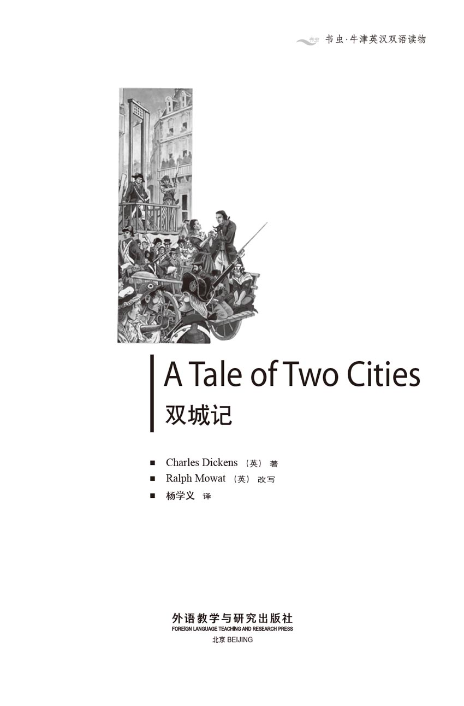
版权页
京权图字 01-96-1573
Originally published by Oxford University Press, Great Clarendon Street, Oxford. © 1994
This edition is licensed for sale in the People's Republic of China only and not for export therefrom.
'Oxford' is a registered trademark of Oxford University Press.
图书在版编目（CIP）数据
双城记 = A Tale of Two Cities／（英）狄更斯（Dickens, C.）著；（英）莫厄特（Mowat, R.）改写；杨学义译．—北京：外语教学与研究出版社，1996.12（2014.11 重印）
（书虫·牛津英汉双语读物）
ISBN 978-7-5600-1157-8
Ⅰ．双… Ⅱ．①狄…②莫… ③杨… Ⅲ．英语—语言读物，小说 Ⅳ．H319.4：I
中国版本图书馆CIP数据核字（96）第24478号
出版人： 蔡剑峰
责任编辑：田 娜
出版发行：外语教学与研究出版社
社 址：北京市西三环北路19号（100089）
网 址：http://www.fltrp.com
版 次：1997年1月第1版
书 号：ISBN 978-7-5600-1157-8
* * *
凡侵权、盗版书籍线索，请联系我社法律事务部
举报电话：（010）88817519
电子邮箱：banquan@fltrp.com
法律顾问：立方律师事务所 刘旭东律师
中咨律师事务所 殷 斌律师
简介
简 介
时间是1775年，在巴黎的一家酒馆的楼上的一间屋子里坐着一位白发男人，他正忙着做鞋。他曾在巴士底狱当了18年的囚徒。现在他已是一个自由人了，然而他却不知道自己的名字，也认不出他的朋友。他所知道的就是他必须继续做鞋。
在一辆去巴黎的车上坐着路茜，这是他从未见过面的女儿。路茜把她父亲带回了伦敦，在女儿的爱心和照料之下，他忘掉了过去并学会了重像一个自由人那样去生活。
然而在法国大革命的暴风雨年代，过去既没有消失也没有被忘掉。于是不久过去的危险秘密地把路茜和她所爱的人们带回了巴黎……那儿恐怖的死亡机器——断头台正饥饿地等候着法兰西的敌人们。
查尔斯·狄更斯是英国最伟大的作家之一，他1812年出生于普茨茅斯，1870年去世。他出身贫寒，但在不幸的童年过后，他很快便变得富有和成功。在他众多的著名小说中有《雾都孤儿》、《远大前程》及《圣诞欢歌》。
目录
1 The road to Paris—1775
1
The road to Paris—1775
It was the best of times, it was the worst of times. It was the season of light, it was the season of darkness. It was the spring of hope, it was the winter of sadness. It was the year one thousand seven hundred and seventy-five.
In France there was a King and a Queen, and in England there was a King and a Queen. They believed that nothing would ever change. But in France things were bad, and getting worse. The people were poor, hungry and unhappy. The King made paper money and spent it, and the people had nothing to eat. Behind closed doors in the homes of the people, voices spoke in whispers against the King and his noblemen; they were only whispers, but they were the angry whispers of desperate people.
Late one November night, in that same year 1775, a coach going from London to Dover, stopped at the top of a long hill. The horses were tired, but as they rested, the driver heard anther horse coming fast up the hill behind them. The rider stopped his horse beside the coach and shouted:
'I want a passenger, Mr Jarvis Lorry, from Tellson's Bank in London.'
'I am Mr Jarvis Lorry,' said one of the passengers, putting his head out of the window. 'What do you want?'
'It's me! Jerry, Jerry Cruncher, from Tellson's Bank, sir,' cried the man on the horse.
'What's the matter, Jerry?' called Mr Lorry.
'A message for you, Mr Lorry. You've got to wait at Dover for a young lady.'
'Very well, Jerry,' said Mr Lorry. 'Tell them my answer is CAME BACK TO LIFE'.
It was a strange message, and a stranger answer. No one in the coach understood what they meant.
The next day Mr Lorry was sitting in his hotel in Dover when a young lady arrived. She was pretty, with golden hair and blue eyes, and Mr Lorry remembered a small child, almost a baby. He had carried her in his arms when he came from Calais to Dover, from France to England, many years ago. Mr Lorry asked the young lady to sit down.
'Miss Manette,' he said. 'I have a strange story to tell you, about one of the customers of Tellson's Bank. That's where I work.'
'Yes, but I don't quite understand, Mr Lorry,' said the young lady. 'I received a message from Tellson's Bank, asking me to come here to meet you. I understood there was some news about my poor father's money. He died so long ago—before I was born. What is this story you want to tell me?'
'About twenty years ago, Miss Manette, a French doctor married an English lady. They had a daughter, but just before she was born, her father disappeared. Nobody knew what had happened to him. Not long afterwards his unhappy wife died, and their daughter was brought back to England.'
'But this is like my father's story, Mr Lorry. And wasn't it you who brought me back to England?'
'Yes, that's true, Miss Manette. Many years ago I brought you from France to England, and Tellson's Bank has taken care of you since then. You were told that your father had died. But think, Miss Manette. Perhaps your father wasn't dead. Perhaps he was in prison. Not because he had done something wrong! But just because he had a powerful enemy—an enemy with the power to send him to prison and to keep him there, hidden and forgotten, for eighteen years!'
'Can it be true? Is it possible that my father is still alive?' Lucie Manette stared at Mr Lorry. Her face was white and her hands trembled. 'It will be his ghost—not him!'
'No, Miss Manette,' said Mr Lorry gently. 'He is alive, but he has changed very much. Even his name had been forgotten! And we must ask no questions about the past, no questions at all. It would be too dangerous. He has been taken to the house of an old servant in Paris, and we are going there to bring him back to life.'
sadness n. unhappy feelings. 悲伤。
whisper n. whispering sound or speech. 低声耳语。
nobleman n. 贵族。
coach n. four-wheeled carriage pulled by four or more horses. 四轮马车。
passenger n. person being conveyed by bus, taxi, tram, train, ship, etc. 乘客，旅客。
message n. piece of news, or a request, sent to sb. 消息。
customer n. person who buys things. 顾客。
marry v. take as a husband or a wife. 结婚。
receive v. accept, take, get. 接受，接收。
disappear v. go out of sight. 消失。
powerful adj. having or producing great power. 有力的，强的。
tremble v. shake involuntarily. 发抖。
afterwards adv. after, later. 以后，后来。
去巴黎的路——1775年
1 去巴黎的路——1775年
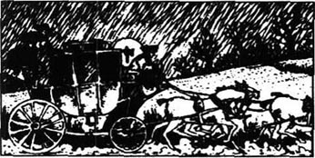
那是最好的年代，也是最糟的年代。那是光明的时节，也是黑暗的时节。那是希望的春季，也是悲伤的冬日。那是公元1775年。
那时的法国有国王和王后，英国也有国王和王后，他们相信什么事情都不会改变。但是法国的境况很糟糕，而且是每况愈下。人民在贫穷、饥饿和不幸中生活。国王发行纸币进行挥霍，而百姓却要忍饥挨饿。在门户紧闭的家中，人们悄声地谈论着反对国王和他的贵族们的话题。它们只是低声的密谈，但却是绝望中的人们愤怒的声音。
就在那1775年11月的一个深夜，一辆从伦敦赶往多佛的马车停在了一条绵延的山丘的顶部。马匹都已经很累了，但在它们休息时，赶车人听到后面有另一匹马正急速地朝他们赶来。骑马人把马停在马车的旁边并喊道：
“我要找伦敦台尔森银行来的贾维斯·劳里先生。”
“我就是贾维斯·劳里先生，”车内的一位乘客从车窗探出头来说道。“有什么事吗？”
“是我！杰里，杰里·克拉彻，从台尔森银行来的，先生。”马上的人喊道。
“什么事，杰里？”劳里先生问道。
“捎个信儿给您，劳里先生，您得在多佛等候一位年轻女士。”
“好吧，杰里，”劳里先生说，“告诉他们，就说我的答复是‘活过来’。”
口信儿是奇特的，而答复就更奇特了。马车上的人都不明白他们在说什么。
第二天，劳里先生在多佛的旅馆里坐着时，来了一位年轻的女士。她很美，有一头金黄的头发和蓝色的眼睛，这让劳里先生想起了一个小孩儿，几乎是个婴儿。那是在很多年前，在从法国加莱去英国多佛的路上，他曾把她抱在怀里。劳里先生让这位年轻女士坐下来。
“马内特小姐，”他说道。“我有个离奇的故事要告诉你，是关于台尔森银行的一位顾客的。台尔森银行是我工作的地方。”
“好吧，但是我不太明白，劳里先生，”年轻的女士说，“我从台尔森银行接到口信，要我到这儿来见您。我知道一些有关我可怜的父亲的钱的事。他很早就已死了——还在我出生之前。您要告诉我的是什么故事呢？”
“大约20年前，马内特小姐，有位法国医生娶了一位英国女士。他们有了一个女儿，但是还在他们的女儿出生之前，这位父亲却失踪了。没有人知道他出了什么事。不久，他那位伤心的妻子也死了，他们的女儿被带回了英国。”
“但这像是我父亲的故事呀，劳里先生。况且不正是您把我带回英国的吗？”
“是的，是这样的，马内特小姐。很多年前我把你从法国带到了英国，并且自那以后台尔森银行就开始照料你。人家告诉你说你的父亲已经死了。但是设想一下，马内特小姐，或许你的父亲那时并没有死，或许他在监狱里呢。那并不是因为他犯了什么罪！而只是因为他有一个强大的敌人——这个敌人拥有权势将他投进监狱，而且把他在那里与世隔绝、被人遗忘地关了18年！”
“这是真的吗？我父亲可能还活着吗？”路茜·马内特紧盯着劳里先生。她的脸色苍白，双手颤抖着。“那会是他的灵魂，而不是他本人！”
“不，马内特小姐，”劳里先生温和地说。“他还活着，只是有了很大的变化，就连他自己的名字也记不得了！我们绝对不可以问起从前的事，一点都不能问。那样的话就太危险了。他已经被带到巴黎一个旧日的仆人的家里，我们就是要去那里让他回到生活中来。”
2 A wine-shop in Paris
2
A wine-shop in Paris
In the part of Paris called Saint Antoine everyone was poor. The streets were narrow and dirty, the food-shops were almost empty. The faces of the children looked old already, because they were so hungry. In the wine-shop of Monsieur Defarge there were not many customers and Defarge was outside, talking to a man in the street. His wife, Madame Defarge, sat inside the shop, knitting and watching. Defarge came in and his wife looked at him, then turned her eyes to look at two new customers, a man of about sixty and a young lady. Defarge went over to speak to them, suddenly kissed the young lady's hand, and led them out of the back of the shop. They followed him upstairs, many stairs, until they reached the top. Defarge took a key out of his pocket.
'Why is the door locked?' asked Mr Lorry in surprise. 'He is a free man now.'
'Because he has lived too long behind a locked door,' replied Defarge angrily. 'He is afraid if the door is not locked! That is one of the things they have done to him.'
'I'm afraid, too,' whispered Miss Manette. Her blue eyes looked worriedly at Mr Lorry. 'I am afraid of him—of my father.'
Defarge made a lot of noise as he opened the door. Mr Lorry and Lucie went into the room behind him. A thin, white haired man was sitting on a wooden seat. He was very busy, making shoes.
'Good day,' said Defarge. 'You are still working hard, I see.'
After a while they heard a whisper. 'Yes, I am still working.'
'Come,' said Defarge. 'You have a visitor. Tell him your name.'
'My name?' came the whisper. 'One Hundred and Five, North Tower.'
Mr Lorry moved closer to the old man. 'Dr Manette, don't you remember me, Jarvis Lorry?' he asked gently.
The old prisoner looked up at Mr Lorry, but there was no surprise, no understanding in his tired face, and he went back to work making shoes.
Slowly Lucie came near to the old man. After a while he noticed her.
'Who are you?' he asked.
Lucie put her arms around the old man and held him, tears of happiness and sadness running down her face. From a little bag the old man took some golden hair. He looked at it, and then he looked at Lucie's hair. 'It is the same. How can it be?' He stared into Lucie's face. 'No, no, you are too young, too young.'
Through her tears Lucie tried to explain that she was the daughter he had never seen. The old man still did not understand, but he seemed to like the sound of Lucie's voice and the touch of her warm young hand on his.
Then Lucie said to Mr Lorry, 'I think we should leave Paris at once. Can you arrange it?'
'Yes, of course,' said Mr Lorry. 'But do you think he is able to travel?'
'He will be better far away from this city where he has lost so much of his life,' said Lucie.
'You are right,' said Defarge. 'And there are many other reasons why Dr Manette shoud leave France now.'
While Mr Lorry and Defarge went to arrange for a coach to take them out of Paris, Lucie sat with her father. Exhausted by the meeting, he fell asleep on the floor, and his daughter watched him quietly and patiently until it was time to go.
When Mr Lorry returned, he and Defarge brought food and clothes for Dr Manette. The Doctor did everything they told him to do; he had been used to obeying orders for so many years. As he came down the stairs, Mr Lorry heard him say again and again, 'One Hundred and Five, North Tower.'
When they went to the coach, only one person saw them go: Madame Defarge. She stood in the doorway, and knitted and watched, seeing everything... and seeing nothing.
narrow adj. measuring little across in comparison with length. 窄的。
knit v. make by looping wool, silk, etc. 编织。
reply v. answer. 回答。
lock v. fasten with a lock. 锁。
wooden adj. made of wood. 木制的。
prisoner n. person kept in prison for crime or until tried in a law-court. 犯人。
stare v. look fixedly. 瞪视。
notice v. observe. 注意，看到。
arrange v. provide for. 安排。
exhaust v. use up completely. 用尽。
patient adj. having, showing, patience. 有耐性的。
obey v. do what one is told to do. 服从，执行。
巴黎的一家酒店
2 巴黎的一家酒店

在巴黎的一个名叫圣安东尼的地方，所有的人都很穷。街道狭窄肮脏，食品店几乎都是空的。孩子们的脸已显出老态，因为他们太饥饿了。在得法热先生的酒店里没有多少顾客，得法热则在门外与街上的一个男人交谈着。他的妻子得法热夫人正坐在店里一边织毛衣一边观察着周围。得法热走进店来，他的妻子看着他，然后就把眼光转过去盯着两位新来的顾客，他们是一位大约60岁的男人和一位年轻的女士。得法热走过去同他们说话，他突然吻起了那位小姐的手，接着领着他们从店铺后面走出去。他们跟着他上楼，爬了很多级楼梯才到达楼顶。得法热从兜里掏出一把钥匙来。
“为什么锁着门？”劳里先生惊讶地问，“他现在是个自由人了。”
“因为他在上了锁的房子里生活的时间太长了，”得法热气愤地回答说，“门要是不锁上他就会害怕！这是他们给他造成的恶果之一。”
“我也害怕，”马内特小姐低声地说。她那蓝蓝的眼睛忧心地看着劳里先生。“我害怕他——我的父亲。”
得法热开门时弄出了很多响声，劳里先生和路茜跟在他后面进了屋子。一个瘦削、满头白发的人正坐在一个木头凳子上。他在忙着做鞋子。
“您好，”得法热说，“您还在忙着哪？”
过了一会儿他们才听到一声嘟哝：“是的，我还在干着活。”
“瞧，”得法热说，“有人来看您了。告诉他们您的名字。”
“我的名字？”嘟哝声传过来道。“一百零五，北塔。”
劳里先生走近了老人。“马内特医生，您不记得我了吗，贾维斯·劳里？”他轻声地问道。
这个老犯人抬起头看着劳里先生，但是没有表现出惊奇，疲惫的脸上没有显示出他明白了什么的表情，然后他又重新做起鞋来。
路茜慢慢地走近了老人。过了片刻他才注意到了她。
“你是谁？”他问道。
路茜伸出胳膊抱住了老人并搂紧他，悲喜交加的泪水滚下了脸颊。老人从一个小包里拿出几缕金发。他看看它们，然后又看看路茜的头发。“是一样的，这怎么可能呢？”他凝视着路茜的脸，“不，不，你太年轻了，太年轻了。”
路茜含着泪竭力地要说明她是他从未曾见过的女儿。老人仍旧不明白，但却似乎很喜欢路茜的声音以及她年轻温暖的手触摸他的手。
后来路茜对劳里先生说：“我看我们得马上离开巴黎。您能安排一下吗？”
“是的，当然能，”劳里先生说，“但你认为他能够旅行吗？”
“远离这个让他失去生命中如此之多的城市，他就会好些的。”路茜说道。
“您说得对，”得法热说，“况且让马内特医生马上离开法国还有很多其他的原因。”
在劳里先生和得法热去安排载他们出巴黎的马车时，路茜陪坐在她父亲的身旁。他被这次相会弄得疲倦极了，便在地板上睡着了，他的女儿则安静而耐心地看顾着他，直到该走的时候。
劳里先生回来时，他和得法热给马内特医生带回来些食物和衣服。医生完全照着他们的要求行事，这么多年来他已经习惯了服从命令。在他下楼时，劳里先生听见他一遍又一遍地说着“105，北塔。”
在他们朝马车走去时，只有一个人看到了他们，那就是得法热夫人。她站在门口，边织着毛衣边观察着。她看到了所有的事情……但没有发现任何的问题。
3 A trial in London—1780
3
A trial in London—1780
Tellson's Bank in the City of London was an old, dark, and ugly building. It smelt of dust and old papers, and the people who worked there all seemed old and dusty, too. Outside the building sat Jerry Cruncher, who carried messages for people in the bank.
One morning in March 1780, Jerry had to go to the Old Bailey to collect an important message from Mr Lorry. Trials at the Old Bailey were usually for very dangerous criminals, and the prisoner that morning was a young man of about twenty-five, well dressed and quite calm.
'What's he done?' Jerry asked the doorman quietly.
'He's a spy! A French spy!' the doorman told him. 'He travels from England to France and tells the French King secret information about our English army.'
'What'll happen if he's guilty?' asked Jerry.
'Oh, he'll have to die, no question of that,' replied the doorman enthusiastically. 'They'll hang him.'
'What's his name?'
'Darnay, Charles Darnay. Not an English name, is it?'
While Jerry waited, he looked around at the crowd inside the Old Bailey and noticed a young lady of about twenty years, and her father, a gentleman with very white hair. The young lady seemed very sad when she looked at the prisoner, and held herself close to her father.
Then the trial began, and the first person who spoke against Charles Darnay was called John Barsad.
He was an honest man, he said, and proud to be an Englishman. Yes, he was, or had been, a friend of the prisoner's. And in the prisoner's pockets he had seen important plans and lists about the English armies. No, of course he had not put the lists there himself. And no, he was not a spy himself, he was not someone paid to make traps for innocent people.
Next the young lady spoke. She said that she had met the prisoner on the boat which had carried her and her father from France to England. 'He was very good and kind to my father and to me,' she said.
'Was he travelling alone on the ship?'
'No, he was with two French gentlemen.'
'Now, Miss Manette, did you see him show them any papers, or anything that looked like a list?'
'No, I didn't see anything like that.'
Questions, questions, questions! The trial went on, and finally, a small, red-haired man spoke. He told the judge that he had seen Mr Darnay at a hotel in a town where there were many soldiers and ships. Then one of the lawyers, a man called Sydney Carton, wrote some words on a piece of paper, and gave it to Mr Stryver, the lawyer who was speaking for Mr Darnay.
'Are you quite sure that the prisoner is the man you saw?' Mr Stryver asked the red-haired man.
'Quite sure,' said the man.
'Have you ever seen anyone like the prisoner?' asked Mr Stryver.
'I'd always be able to recognize him.' The red-haired man was very confident.
'Then I must ask you to look at the gentleman over there,' said Mr Stryver, pointing to Sydney Carton. 'Don't you think that he is very like the prisoner?'
Everyone in the court could see that Sydney Carton and Charles Darnay were indeed very similar.
'Well then,' said Mr Stryver, 'it is so easy to find a man like the prisoner that we can even find one in this room. So how can you be so sure that it was the prisoner you saw in that hotel?'
And the red-haired man said not another word.
The lawyers talked and argued, and when at last the trial came to an end, Jerry Cruncher had fallen asleep.
But Mr Lorry woke him up and gave him a piece of paper. 'NOT GUILTY' were the words written on it, and Jerry hurried back to Tellson's Bank with the message.
Sydney Carton seemed to be a man who did not care about anyone or anything. He was Mr Stryver's assistant. In fact, he did most of the real work for Mr Stryver. Stryver was good at speaking at a trial, but he was not good at discovering important facts and details, especially when these details were hidden in a lot of papers. Every night Carton studied the many papers that lawyers have to read, and he wrote down the questions which Stryver should ask at the next day's trial. And every day Stryver asked these questions, and people thought how clever he was.
Outside the Old Bailey Mr Darnay, now a free man, met his friends: Dr Manette and his daughter Lucie, Mr Jarvis Lorry, Mr Stryver, and Mr Carton.
Dr Manette no longer looked like the man in the room above Defarge's wine-shop five years ago. His hair was white, but his eyes were bright and he stood straight and strong. Sometimes his face became dark and sad when he remembered the years in the Bastille prison; at these times only his daughter Lucie, whom he loved so much, could help him.
As they stood there talking, a strange expression came over Dr Manette's face. He was staring at Charles Darnay, but he did not seem to see him. For a few moments there was dislike, even fear in his eyes. 'My father,' said Lucie softly, putting her hand on his arm, 'shall we go home now?'
'Yes,' he answered slowly.
Soon they drove off in a coach, and then Mr Stryver and Mr Lorry walked away, leaving Mr Darnay and Mr Carton alone.
'It must be strange for you,' said Carton, 'to be a free man again, and to be standing here, talking to a man who looks just like you. Let us go out and eat together.'
After they had eaten, Carton said softly, 'How sad and worried Miss Manette was for you today! She's a very beautiful young woman, don't you think?'
Darnay did not reply to what Carton had said, but he thanked him for his help at the trial.
'I don't want your thanks,' replied Carton. 'I have done nothing. And I don't think I like you.'
'Well,' said Darnay, 'you have no reason to like me. But I hope that you will allow me to pay the bill for both of us.'
'Of course. And as you are paying for me, I'll have another bottle of wine.'
After Darnay had left, Carton drank some more wine and looked at himself in the mirror. He was angry because Darnay looked so much like him, but was so different. Carton knew that he was a clever lawyer, and that he was a good and honest man, but he had never been successful for himself. He drank too much, and his life was unhappy and friendless. His cleverness and his hard work in the law only made others, like Mr Stryver, successful and rich. He remembered Lucie Manette's worried face when she watched Darnay in court.
'If I changed places with Darnay,' he whispered to himself, 'would those blue eyes of Miss Manette look at me, in the same way? No, no, it's too late now.'
He drank another bottle of wine and fell asleep.
In a quiet street not far away was the house where Dr Manette and Lucie lived. They had one servant, Miss Pross, who had taken care of Lucie since she was a child. Miss Pross had red hair and a quick, sharp voice, and seemed at first sight a very alarming person. But everybody knew that she was in fact a warm-hearted and unselfish friend, who would do anything to guard her darling Lucie from trouble or danger.
Dr Manette was now well enough to work as a doctor, and he, Lucie, and Miss Pross led a quiet, comfortable life. Mr Lorry, who had become a close family friend, came regularly to the house, and in the months after the trial, Mr Darnay and Mr Carton were also frequent visitors. This did not please Miss Pross at all, who always looked very cross when they came.
'Nobody is good enough for my darling Lucie,' she told Mr Lorry one day, 'and I don't like all these hundreds of visitors.'
Mr Lorry had a very high opinion of Miss Pross, but he wasn't brave enough to argue that two visitors were not 'hundreds'. Nobody argued with Miss Pross if they could avoid it.
trial n. examination in court of law before a judge. 审讯。
criminal adj. of crime. 犯罪的。
enthusiastically adv. full of enthusiasm. 热心地，热情洋溢地。
information n. sth. told; news or knowledge given. 消息，情报。
spy n. person who tries to get secret information. esp. about the military affairs of other countries. 间谍。
trap v. capture by a trick. 陷害。
innocent adj. not guilty. 无罪的。
confident adj. feeling or showing confidence. 有信心的。
similar adj. like. 类似的。
assistant n. helper. 助手。
detail n. collection of such small facts or items. 详情。
gentleman n. polite form of address to male members of an audience. 先生。
write down take a note of. 记下，写下。
straight adj. without a bend or curve. 直的。
expression n. a person's facial appearance. 表情。
dislike v. not like. 不喜欢。
allow v. let, permit. 允许
bill n. statement of charges for goods delivered or services rendered. 账单。
servant n. person who works in a household for wages, food, and lodging. 仆人。
mirror n. 镜子。
successful adj. having the gaining of what is aimed at. 成功的。
alarming adj. causing alarm. 吓人的。
frequent adj. often happening. 时常发生的。
avoid v. keep or get away from. 避免。
regularly adv. in a regular manner. 经常地。
伦敦的一次审判——1780年
3 伦敦的一次审判——1780年
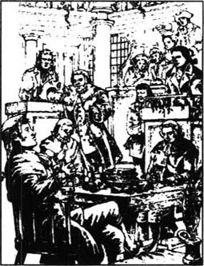
伦敦城里的台尔森银行是一座古老、灰暗而且丑陋的建筑。这里充斥着灰尘和废纸的气味，就连在里面工作的人似乎也都古旧而灰头灰脑的。负责为银行里的人传书送信的杰里·克拉彻坐在银行的外面。
1780年3月的一天早晨，杰里要去旧巴勒从劳里先生那儿获取一条重要信息。在旧巴勒的审判往往都是对那些非常危险的犯人进行的，而那天早上的罪犯是一个大约25岁左右的年轻人。他穿着体面，人也很沉着。
“他犯了什么罪？”杰里轻声地问看门人。
“他是一个间谍！一个法国间谍！”看门人告诉他，“他从英国赶到法国，然后把英国军队的动向秘报给了法国国王。”
“如果判他有罪的话他会受什么样的惩罚？”杰里问。
“哦，得判死刑，这是无疑的。”看门人情绪高昂地回答说，“他们会绞死他的。”
“他叫什么名字？”
“代尔那，查尔斯·代尔那。不是一个英国名字，是吧？”
杰里一边等着，一边朝旧巴勒里的人群巡视。他注意到了一位20岁左右的年轻女子和她的父亲——一位白发苍苍的绅士。当年轻女子看着罪犯时显得很悲伤，并紧紧地搂住她的父亲。
审判开始了。第一个起诉查尔斯·代尔那的人名叫约翰·巴萨德。他自称是一个诚实的人，并以自己是英国人而自豪。他承认自己是或曾经是罪犯的一个朋友，而且他曾见过罪犯的衣袋里有一些关于英国军队的重要计划和图表。当然，他否认是他本人把图表放进去的，也否认自己是间谍，他也不是受人收买而去陷害无辜的那种人。
接下来是那个年轻女子发言。她说在她和父亲从法国来英国的船上曾遇到过这个犯人。“他对我父亲和我都很友善。”她说。
“他当时是只身一人乘船旅行的吗？”
“不，他和两个法国人在一起。”
“那么，马内特小姐，你看到他给他们看了什么文件或任何类似表格的东西吗？”
“没有，我没有看见过任何这类的东西。”
问题一个接着一个地提出来！审判继续进行着。最后，一位矮小、红头发的男人说话了。他告诉法官说他曾在一个小镇的一家旅馆见到过代尔那先生，那儿有很多的士兵和船只。接下来一位名叫西得尼·卡登的律师在一张纸上写了几个字并把它递给代尔那先生的辩护律师史太弗先生。
“你能肯定这个犯人就是你见过的那个人吗？”史太弗先生问那个红头发男人。
“非常肯定。”他说。
“你曾见过和这个罪犯长得相像的人吗？”史太弗先生问。
“无论如何我都能把他认出来的。”红头发男人非常自信。
“那么我得请您看看那边的那位先生，”史太弗先生指着西得尼·卡登说，“您不认为他长得非常像这位犯人吗？”
法庭上的每一个人都能看出西得尼·卡登和查尔斯·代尔那长得的确很相像。
“那么说，”史太弗先生说道。“很容易就能找到一个与罪犯相像的人，甚至在这间屋子里我们就能找出一个和罪犯长得酷似的人，那你又怎么能确信你在旅馆里看到的人就是罪犯呢？”
红头发男人再也说不出话来了。
律师们开始争辩讨论。当审判最后结束时，杰里·克拉彻都已睡着了。
但是劳里先生叫醒他并且给了他一张纸条，上面写着“无罪”的字样，杰里便急急忙忙地带着这条消息回了银行。
西得尼·卡登似乎对任何人或任何事都不在乎。他是史太弗先生的助手，实际上，多数实际工作是他代劳的。史太弗先生在法庭上能言善辩，但却不擅长于发现重要的事实和细节，尤其是当这些细节隐藏在一大堆文件中的时候。每天晚上卡登都要研读那些律师必读的文件，然后写下史太弗在第二天的审判中所要问的问题。每天史太弗问到这些问题时，人们都会赞叹他的机智。
在旧巴勒的外面，现在已是自由人的代尔那先生和他的朋友们在一起：有马内特医生和他的女儿路茜、贾维斯·劳里先生、史太弗先生和卡登先生。
马内特医生看上去已不再是5年前在得法热酒店楼上房间里的那个样子了。他的头发白了，但眼睛炯炯有神。他站姿笔直，显得很矍铄。有时当他想起在巴士底狱的日子，脸上就会显得阴沉而悲伤。这时只有他所钟爱的女儿路茜能让他快活起来。
在他们站着谈话时，一种奇怪的表情掠过医生的脸。他盯着查尔斯·代尔那，但又似乎并没有看他。有好一阵儿他的眼中都显出反感甚至是恐惧的神情。
“爸爸，”路茜柔声地说着，并把手放在了他的胳膊上，“我们回家好吗？”
“好吧。”他慢慢地答道。
很快他们就坐上马车走了。然后，史太弗先生和劳里先生也走开了，剩下代尔那先生和卡登先生单独在一起。
“你一定感到奇怪。”卡登说，“你又自由了，而且站在这儿和一个长得酷似你的人谈话。我们一起出去吃一顿吧。”
饭后，卡登轻声地说，“瞧，今天马内特小姐为你多么伤心着急呀！她可是个漂亮的姑娘，你不这么认为吗？”
代尔那没有回应卡登的话，而是对他在法庭上的帮助表示感谢。
“我不要你的感谢。”卡登说，“我没做什么。我想我也并不喜欢你。”
“好吧，”代尔那说，“你没有理由要喜欢我，但是我希望你允许我为我们两个人付账。”
“当然。而且既然你要为我付账，那么我就再来一瓶葡萄酒吧。”
代尔那走后，卡登又喝了些酒，并照了照镜子。让他恼火的是代尔那长得和他如此相像，但是他们又如此不同。卡登明白自己是一个精明的律师，又是一个诚实的好人，但他自己却从未成功过。他酗酒，生活不幸且没有朋友。他在法律方面的聪明才智和辛勤工作仅仅使得他人，比如史太弗先生，名利双收。路茜·马内特在法庭上看着代尔那时的焦急面容仍在他的脑海中。
“如果我和代尔那换个位置，”他悄声对自己说，“马内特小姐的那双蓝眼睛也会那样看着我吗？不，不，现在已经太晚了。”
他又喝了一瓶酒，然后就睡着了。
马内特医生和路茜所住的房子就在不远处的一条宁静的街上。他们有一个仆人，普罗斯小姐。路茜从小时候起就是由她带大的。普罗斯小姐有一头红发，说话急促而尖利。第一眼看上去她会让人感到害怕。但每个人都知道她实际上是个热心而无私的朋友。她会不惜一切地保护她亲爱的路茜免遭麻烦和危险。
马内特医生现在已恢复得很好，已经可以胜任医生的工作了。他、路茜和普罗斯小姐过着宁静而舒适的生活。劳里先生已成为这个家的亲密朋友，经常来这里做客。同时在那个审判会过后几个月，代尔那先生和卡登先生也成了这里的常客，这让普罗斯小姐一点儿都不高兴。每次他们来时她都显得很生气。
“没有人能配得上我亲爱的路茜。”她有一天对劳里先生说，“而且我也不喜欢这成百个的客人。”
劳里先生很看重普罗斯小姐，可他却没有足够的勇气去和她争论说两个客人够不上“成百个”。只要能避免就没人愿意去和普罗斯小姐争吵。
4 The Marquis of Evrémonde
4
The Marquis of Evrémonde
The Marquis of Evrémonde was a disappointed man. He had waited for hours at the palace of the King of France, but the King had not spoken to him. Angrily, the Marquis got into his coach and told the driver to take him home. Very soon the coach was driving fast out of Paris, and the people in the narrow streets had to run to get out of the way—if they could. At the corner of a street in Saint Antoine, one of the coach wheels hit something, and the people in the street screamed loudly. The horses were frightened and stopped.
'What has gone wrong?' asked the Marquis calmly, looking out of the window of the coach. A tall man had picked something up from under the feet of the horses and was crying loudly over it.
'Why is that man making that terrible noise?' asked the Marquis impatiently.
'I'm sorry, Monsieur the Marquis. It is his child,' said one of the people.
'Dead! Killed!' screamed the man.
The people in the street came close to the coach and looked at the Marquis with stony, silent faces. The Marquis looked back at them in bored dislike. To him, they were no more than animals.
'I can't understand,' he said coldly, 'why you people cannot take care of yourselves and your children. I hope my horses are not hurt.' And he threw a gold coin to his driver. 'Give this to that man!'
'Dead!' shouted the father of the child again.
Another man came forward. 'Be brave, Gaspard. Your child has died quickly, and without pain. It is better to die like that than to go on living in these terrible times.'
'You are a sensible man,' said the Marquis from his coach. 'What is your name?'
'They call me Defarge.'
'This is for you,' said the Marquis, and he threw Defarge another gold coin. 'Drive on,' he called to his driver.
Just as the coach was leaving, a coin was thrown back in through the window. The Marquis looked angrily at the corner where Defarge had been standing. Defarge had gone. At the corner there now stood a large, dark-haired woman, knitting. She stared long and hard at the face of the Marquis, but he did not look at her, and drove on.
Later that day, as the sun was going down, the same coach stopped in a village near the Marquis's castle. Several villagers, in poor thin clothes, with thin hungry faces, were standing in the village square. The Marquis looked at their faces and then pointed to one of them.
'Bring that man to me,' he said to his driver.
The man came up to the coach, hat in hand, and the other villagers moved closer to listen.
'I passed you on the road just outside the village,' said the Marquis. 'You were looking at my coach in a very strange way. Why was that?'
'Monsieur, I was looking at the man,' came the reply.
'What man?' asked the Marquis angrily.
'The man who was holding on under your coach,' said the poor man, trembling with fear.
'What was he like?'
'Oh, Monsieur, he was white from head to foot. All covered with dust. Just like a ghost.'
'Where is he now? What happened to him?'
'Oh, he ran away down the hill outside the village.'
The Marquis turned to speak to another man. This was Monsieur Gabelle, the Marquis's official in the village.
'Gabelle,' the Marquis said, 'watch out for this man. If he comes here, put him in prison.'
When the Marquis arrived at his castle, he asked if his nephew, Monsieur Charles, had arrived from England.
'Not yet, sir,' replied the servant, but as the Marquis was eating his dinner, he heard the sound of a coach outside. Soon his nephew entered the room. In England he was known as Charles Darnay.
'You've been away for a long time,' said the Marquis, with his cold, polite smile.
'I've had many problems in England. Perhaps because of you,' Darnay said to his uncle. 'I was in great danger.'
'No, no, I had nothing to do with your problems,' replied the Marquis coldly. 'Unfortunately, our family no longer has the power that it once had.'
'If it still had that power, one word from you would doubtless send me to prison,' said Darnay.
'Possibly. For the good of our family.'
'The name of our family is hated everywhere in France. We are hard, cruel landowners. Our miserable people own nothing. They work for us night and day, but they don't even have enough food for themselves and their children. If this land became mine, I would give it away, and go and live somewhere else.'
'You seem to be very fond of England, although you are not a rich man there,' said the Marquis. 'I believe you know another Frenchman who has found a safe home there. A Doctor, I believe?'
'Yes.'
'With a daughter?'
'Yes.'
'Yes,' said the Marquis with a secret smile on his face. 'So, a new way of life begins. But you are tired. Goodnight, Charles. Sleep well. I shall see you in the morning.'
After his nephew had gone to bed, the Marquis went to his room. The castle was surrounded with darkness. In the villages nearby the hungry people dreamt of a better life, with enough good food to eat, and time to rest from their work.
Early in the morning the dreamers awoke and started their day's hard work. The people in the castle did not get up until later, but when they did, why did the great bell start ringing? Why did people run out of the castle to the village as fast as they could?
The answer lay in the bed of the Marquis. He lay there, like stone, with a knife pushed into his heart. On his chest lay a piece of paper with the words:
'Drive him fast to his grave. This is from JACQUES.'
disappointed adj. sad at not getting what was hoped for. 失望的。
hit v. strike, come against with force. 撞，碰。
scream v. give a loud, sharp cry of. 尖声叫喊。
stony adj. hard, cold, and unsympathetic. 冷酷的，无情的。
take care of look after. 照看，照顾。
coin n. metal money. 硬币。
sensible adj. having or showing good sense. 明智的。
square n. square space in a town, with buildings round it. 广场。
point to direct attention to. 指向。
ghost n. spirit of a dead person appearing to sb. still living. 鬼，幽灵。
official n. person holding a government position or engaged in public work. 官员。
castle n. large building or group of buildings fortified against attack, esp. as in olden times. 古堡，城堡。
enter v. come or go into. 进入。
unfortunately adv. in an unfortunate manner. 不幸地。
doubtless adv. without doubt; very probably. 无疑地。
miserable adj. very unhappy. 不幸的，可怜的。
cruel adj. taking pleasure in the suffering of others. 残忍的。
awake adj. roused from sleep. 被唤醒的。
chest n. upper front part of the body. 胸部。
埃弗蒙侯爵
4 埃弗蒙侯爵
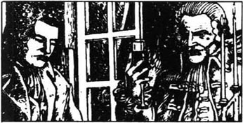
埃弗蒙侯爵很失望。他在法国王宫里等了好几个小时了，可是国王一直没和他说话。侯爵怒气冲冲地上了马车并告诉车夫送他回家。很快马车就快速地驶出巴黎，人们不得不在狭窄的街道上跑着给它让路——如果他们能做到的话。在圣安东尼的一个街道的拐角处，马车的一个车轮撞上了什么东西，街上的人们都尖叫起来。马匹受了惊吓，停了下来。
“出了什么事？”侯爵从车窗探出头来沉着地问。一个高个子男人已从马蹄底下捡起了什么东西并朝它大哭起来。
“那个男人干嘛弄出那么可怕的声音？”侯爵不耐烦地问。
“对不起，侯爵先生，那是他的孩子。”其中一个人说。
“死了！被撞死了！”那个男人哭喊道。
街上的人们走近马车，带着冰冷、无言的表情看着侯爵。侯爵不耐烦又厌恶地回头看着他们。对他来说，他们不过是些动物而已。
“我真不明白，”他冷冷地说，“你们这帮人为什么不能照顾好自己和你们的孩子。但愿我的马没有受伤。”接着他把一个金币扔给车夫。“把它给那个男人！”
“死了呀！”孩子的父亲又一次嚷道。
另外一个男人走上前来。“勇敢些，加斯珀，你的孩子很快地就死了，而且没有痛苦，这样死掉总比活在这个可怕的年月里要好些。”
“你是一个通情达理的人。”侯爵在马车上说。
“你叫什么名字？”
“他们叫我得法热。”
“这是给你的。”侯爵说着，将另一枚金币扔给得法热。“继续走。”他对他的车夫喊道。
就在马车离开时，一枚金币从车窗扔进了车里。侯爵愤怒地看着得法热一直站着的那个拐角处。得法热已经走了。那个拐角处现在站着一个身材高大、黑头发的女人在织着毛线活儿。她长久地死死盯着侯爵的脸，但他并没有看她而是接着赶路。
那天的晚些时候，太阳落山时，那同一辆马车停在了侯爵的城堡附近的一个村子里。几个衣衫褴褛、面黄饥瘦的村民正站在村里的场地上。侯爵看着他们的脸庞然后指着其中的一个人。
“把那个男人带过来。”他对他的车夫说道。
那个人朝马车走过来，手里拿着帽子，其余的村民都走近前来聆听。
“我在村外的那条路上从你旁边经过，”侯爵说，“你当时正用一种奇特的眼光看着我的马车。为什么要这样？”
“先生，我那时正看着那个男人。”回答说。
“什么男人？”侯爵生气地问。
“就是那个扒在您马车底下的男人。”这个可怜人说道，身子因为害怕而发抖。
“他长得什么样？”
“，先生，他从头到脚都是白的，全身是土，活象一个鬼魂。”
“他现在在哪儿？他怎么啦？”
“哦，他朝村外的山脚下跑去了。”
侯爵转过身去和另外一个人说话。那是加贝尔先生，是侯爵在村子里的官员。
“加贝尔，”侯爵说，“留神这个人。如果他来这儿，就把他送进监狱。”
当侯爵到了他的城堡后，他便问起他侄儿查尔斯先生是否从英格兰回来了。
“还没有，先生。”仆人回答说。但是在侯爵吃晚饭时，他听到外面有马车的声音。不久他的侄子便走进屋来。在英国他的名字是查尔斯·代尔那。
“你离开很长时间了。”侯爵带着冷冷的、有礼貌的微笑说道。
“我在英国遇到了很多麻烦，也许是因为你。”代尔那对他的叔叔说，“我的处境曾经非常危险。”
“不，不，我和你遇到的麻烦没有关系。”侯爵冷漠地说，“很不幸，我们的家族不再有它以往的权势了。”
“如果还有那样的权势，你的一句话就可以毫无疑问地把我送进监狱了。”
“也许吧。为了家族的利益嘛。”
“我们家族的名字在法国所有的地方都令人痛恨。我们是心狠手辣的地主。我们苦难的人民一无所有。他们日夜为我们工作，可他们和他们的孩子却食不果腹。如果把这些土地给我，我就把它们分给别人，然后离开这儿去别处生活。”
“你似乎很喜欢英国，尽管你在那儿算不上一个有钱人，”侯爵说，“我想你认识另外一个法国人，他已在那儿找到了安身之所。他是个医生，对吗？”
“是的。”
“他有一个女儿？”
“是的。”
“啊，”侯爵说，脸上露出神秘的笑容。“那么，一种新的生活方式开始啦。但是你已经累了。晚安，查尔斯，祝你睡个好觉，我明天早上再见你。”
在他侄儿上床后，侯爵进了自己的房间。城堡被夜色包围。附近村子里饥饿的人们在梦想着过上好一点的生活，以便有足够的好食物吃，还可以工作后有时间休息。
一大早人们便从睡梦中醒来开始他们一天的辛勤劳作。城堡里的人很晚才会起床的。可等到他们起床时，为什么那个大钟开始响了起来呢？人们为什么拼命地从城堡往村子里跑呢？
答案就在侯爵的床上。侯爵像一块石头僵躺在床上。一把尖刀插进了他的心脏，在他的胸前放着一张纸条，上面写着：
“快把他送进他的坟墓。这是雅克干的。”
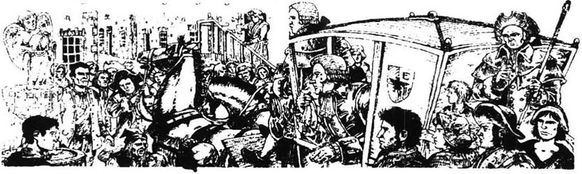
5 Two men speak of love
5
Two men speak of love
Twelve months after the death of the Marquis in France, Charles Darnay had become a successful teacher of French in London. He had known, when he came to London, that he would have to work hard to earn his living, and he was successful. He was also in love. He had loved Lucie Manette from the time when his life was in danger in the Old Bailey. He had never heard a sound so sweet as her gentle voice; he had never seen a face so beautiful as hers. But he had never spoken to her about his love. The death of his uncle in France had become, over the twelve months, like a dream to him, but he had said nothing to Lucie of his feelings, nor of what had happened. He had good reason for this.
But one day in the summer he came to Dr Manette's home in London. He knew that Lucie was out with Miss Pross, and he had decided to speak to her father. Dr Manette was now strong in body and mind, and sad memories of his long years in prison did not come back to him often. When Darnay arrived, the Doctor welcomed him warmly.
'Dr Manette,' said Darnay, 'I know that Lucie is out. But I have come here today to speak to you.'
There was a silence. 'Do you want to speak to me about Lucie?' asked the Doctor, slowly.
'Yes. Dear Dr Manette, I love your daughter dearly. If there was ever love in the world, I love Lucie.
'I believe you,' said Dr Manette sadly. 'It's very hard for me to speak of her at any time, but I believe you, Charles Darnay. Have you spoken to Lucie about your love?'
'No, never. I know how much your daughter means to you, Dr Manette. Her love for you, and your love for her, these are the greatest things in your life, and in hers. I love Lucie. With all my heart I love her. But I do not want to come between you and her. The two of you will never be separated because of me.'
For a moment Dr Manette turned his head away, and his eyes were full of fear, and pain. Then he looked back at Darnay, and tried to smile.
'You have spoken very honestly, Charles,' he said. 'Have you any reason to believe that Lucie loves you?'
'None!'
'Then what do you want from me?'
'A promise. A promise that if Lucie ever tells you that she loves me, you will not speak against me, and will tell her what I have said. I know that she would never accept me if she believed that it would make you unhappy.'
'I can promise you more than that, Charles. If Lucie ever tells me that she loves you, I shall give her to you.'
'Thank you, Dr Manette,' said Darnay, gratefully. 'There is one thing more. My name in England is not my real name. I want to tell you what my real name is, and why I am in England.'
'Stop!' said the Doctor. He had even put his hands over his ears. 'I don't want to know. Tell me when I ask you. If Lucie agrees to marry you, you shall tell me on the morning of your marriage.'
It was dark when Darnay left Dr Manette, and it was some time later when Lucie and Miss Pross came home.
'Father,' Lucie called, 'where are you?' She heard no answer, but there were strange sounds coming from her father's bedroom. Frightened, she ran upstairs and found her father, pale and silent, busy at his old prison work of making shoes. The shadow of the Bastille had fallen on him again. She took his arm and spoke gently to him, and together they walked up and down for a long time until at last Dr Manette went quietly to bed.
Although Mr Carton visited Dr Manette's house quite often, he usually said very little when he was there. One day in August he arrived when Dr Manette was out and he was received by Lucie. She had always been a little shy with him, but on that day she noticed something different in his face.
'Aren't you well, Mr Carton?' she asked.
'No, probably not, Miss Manette, but my way of life is not good for my health.'
'That seems sad,' said Lucie gently. 'Why do you not change your way of life?'
'It's too late for that. I shall never be better than I am. But, Miss Manette, there is something that I want to say to you, but I find it so difficult. Will you listen to me?'
'If it will help you, Mr Carton, I will be happy to listen to you,' said Lucie, but she was pale and trembling.
'Miss Manette, I know that you could never have feelings of love for me, a man who has spent his life so badly.'
'Even without my love, Mr Carton, can I not save you? Can I not help you?'
'No, Miss Manette,' said Carton. 'Even if it was possible for you to love me, it is too late for me. I would only make you sad, and destroy your life. But it has been a last dream of my heart. To see you and your father together, to see the home that you have made for him—this has brought back old and happier memories for me.'
'Can I do nothing to help you?' asked Lucie sadly.
'Only this, Miss Manette. Let me remember that I spoke to you of the feelings of my heart, and that you were kind and gentle towards me.'
'Oh, Mr Carton. Try again to change.'
'No, Miss Manette, it is too late. My bad habits will never change now. But tell me that you will never speak of what I have said today, not to anyone, not even to the person dearest to you.'
'Mr Carton,' said Lucie. 'This is your secret. No one will ever know it from me.'
'Thank you, Miss Manette. I shall never speak of this again. But in the hour of my death, it will be a happy memory for me that my last words of love were to you.'
Lucie had never heard Mr Carton speak like this before. Tears came to her eyes as she thought of his hopeless, miserable life.
'Don't cry,' said Sydney Carton. 'I am not worth your love. But you should know that for you, or for anyone close to you, I would do anything. Please remember always, that there is a man who would give his life to keep someone you love alive and close to you. Goodbye, Miss Manette.'
On the day of Lucie's marriage to Charles Darnay, Mr Lorry and Miss Pross stood, with Lucie, outside the door of Dr Manette's room. Inside, the Doctor and Mr Darnay had been talking together for a long time.
Soon it would be time to leave for the church. Lucie looked very beautiful, and Mr Lorry watched her proudly. He talked about the day, so long ago, when he had brought Lucie, as a baby in his arms, from France to England. Miss Pross, too, had her memories and thought fondly of her brother Solomon. He had stolen money from her many years ago and she had never seen him since then, but she still loved him.
The door of the Doctor's room opened and he came out with Charles Darnay. The Doctor's face was white, but he was calm. He took his daughter's arm and they went out to the waiting coach. The others followed in a second coach and soon, in a nearby church, Lucie Manette and Charles Darnay were married.
After the marriage Lucie and Charles came back to the house for breakfast, and then Lucie had to say goodbye to her father for two weeks—the first time they had not been together since his return from Paris.
When Lucie and Charles had left, Mr Lorry noticed a change in the Doctor. A little sadness was natural, but there was a lost, frightened look in the Doctor's eyes, which worried Mr Lorry very much. When he left to go to Tellson's Bank, he whispered to Miss Pross that he would return as quickly as he could.
Two hours later he hurried back to the house, and Miss Pross met him at the door.
'Oh, what shall we do, Mr Lorry?' she cried. 'He doesn't know me, and is making shoes again!'
Mr Lorry went up to the Doctor's room. 'Dr Manette, my dear friend. Look at me. Don't you remember me?'
But Dr Manette said nothing and worked on in silence. Once again, he was a prisoner in the Bastille, without friends or family, without even a name of his own.
For nine days and nine nights the shoemaker worked on, leaving his table only to sleep, eat, or walk up and down his room. Mr Lorry sat with him night and day, talking gently to him from time to time, trying to bring his friend's mind back to the present.
Then at last, on the tenth morning, the shoemaking work was put away, and Dr Alexandre Manette, pale but calm, was his old self again. Lucie was never told, and in the quiet and happy years that followed her marriage, Dr Manette remained strong in mind and body.
sweet adj. tasting like sugar or honey. 甜的。
memory n. sth. that is remembered. 记忆中的事。
welcome v. show pleasure or satisfaction at sth., at the arrival of sb. or sth. 欢迎。
separate v. make, become or keep divided. 使分离。
full of holding or having plenty. 有很多的。
promise n. an assurance that one will or will not undertake a certain action, behaviour, etc. 诺言，约定。
accept v. receive. 接受，答应。
agree v. say 'yes'. 同意，答应。
frightened adj. afraid. 害怕的。
pale adj. having little color. 苍白的，没有血色的。
shadow n. area of shade, dark shape. 影，阴影。
save v. make or keep safe. 拯救。
possible adj. that can be done, that can exist or happen. 可能的。
destroy v. break to pieces. 破坏。
habit n. sb.'s settled practice, esp. sth. that cannot easily be given up. 习惯。
worth adj. giving a satisfactory or rewarding return for. 值得。
church n. building for public Christian worship. 基督教堂。
fondly adv. lovingly. 爱怜地。
natural adj. ordinary; normal. 普通的，正常的。
silence n. condition of not speaking, answering. 无言。
mind n. what a person thinks or feels. 心思，感想。
present n. the time now passing. 现在，目前。
put away give up. 放弃。
remain v. continue in some place or condition. 依然，继续存在。
两个男人谈论爱情
5 两个男人谈论爱情
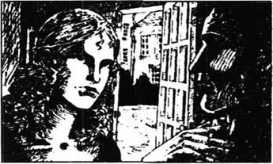
法国侯爵死了12个月之后，查尔斯·代尔那已经在伦敦成了一名成功的法语教师。在他前往伦敦时他就知道自己将不得不靠勤奋的工作谋生。他成功了。同时他还陷入了爱河之中。还在他的生命在旧巴勒处于危险的境地时，他就已经爱上了路茜·马内特。他从未听到过像她那么甜蜜的声音，他也从未见过她那么美丽的脸庞。可他从未向她表白过爱慕之情。他在法国的叔叔的死在12个月之后，对他来说已经成了一个梦。但他没有对路茜说过他的感受，也从未提起过所发生的事情。对此他自有理由。
但是夏季的一天他去到伦敦马内特医生家。他知道路茜和普罗斯小姐出去了。他已决定要和她的父亲谈一谈。马内特医生的身心现在都已很强壮，过去漫长的监狱生活的悲伤记忆已不常浮现在他眼前了。代尔那来时，医生热情地欢迎了他。
“马内特医生，”代尔那说，“我知道路茜出去了。但我今天到这儿来是想和您谈谈的。”
一阵沉默。“你是想和我谈谈路茜吧？”医生慢慢地问道。
“是的，亲爱的马内特医生，我深深地爱着您的女儿。如果这世界上有爱情的话，那么我就爱路茜。”
“我相信你，”马内特医生忧伤地说，“任何时候谈起她对我来说都很困难，但我相信你，查尔斯-代尔那。你对路茜表白过你对她的爱了吗？”
“没有，从来没有过。我知道您女儿对您来说多么重要，马内特医生。她对您的爱和您对她的爱都是您的及她的生命中最重要的东西。我爱路茜，全心全意地爱她。但是我不想打破你们的关系。你们两个人将永不会因为我而分开。”
有一阵儿马内特医生把头侧转过去，眼中充满了恐惧和痛苦。后来他转过头来看着代尔那，尽力装出一副笑脸。
“你说得很诚恳，查尔斯，”他说，“你有什么理由相信路茜爱你吗？”
“没有！”
“那么你想从我这儿得到什么呢？”
“承诺。这个承诺就是一旦路茜告诉您她爱我，那么您就不要说反对的话，并且告诉她我所说的这些话。我知道如果她认为您会痛苦，那就绝不会接受我的爱。”
“我可以承诺更多的东西，查尔斯。如果路茜告诉我说她爱你，我就会把她交给你。”
“谢谢您，马内特医生。”代尔那感激地说，“还有一件事，我在英国的名字不是我的真实姓名，我想告诉您我的真实姓名，还有我来英国的原因。”
“打住！”医生说。他甚至已经用手捂住了耳朵。“我不想知道。我问你时你再告诉我吧。如果路茜同意嫁给你，你就要在你们结婚的那天早晨告诉我。”
代尔那离开马内特医生时天已经黑了。路茜和普罗斯小姐晚些时候才回家。
“爸爸，”路茜喊道，“您在哪儿？”她没有听到回答，可是从她父亲的卧室里传来了些奇怪的声音。路茜吓坏了，她跑上楼去见到了父亲，他脸色苍白，正在悄无声息地忙着做在监狱里干的老活计——做鞋子。巴士底狱的阴影又一次降临到了他身上。她抓住了父亲的手，温柔地对他说着话，并且和他一起来来回回走了很长时间，直到最后马内特医生安静地上床睡觉了。
尽管卡登先生经常拜访马内特医生家，但他来时总是很少说话。8月的一天他来时马内特医生出去了，路茜接待了他。她在他面前总是有点害羞，但那天她注意到了他的脸上有种不同以往的神情。
“您不舒服吗，卡登先生？”她问。
“不，大概不是吧，马内特小姐。只是我的生活方式对健康不好。”
“那可太不幸了，”路茜柔声说，“您为什么不改变一下您的生活方式呢？”
“那太晚了。我永远不会比现在有什么起色了。但是，马内特小姐，我有一件事想对您说，但又发现这太难了。您会听我说吗？”
“如果那对您有帮助的话，卡登先生，我会乐意听您说的。”路茜说。然而她的脸色苍白，浑身发抖。
“马内特小姐，我知道您是永远不会对我有爱情的。我这个人生活得这么糟糕。”
“即便没有爱情，卡登先生，难道我就不能挽救您吗？我不能帮您吗？”
“不，马内特小姐，”卡登说，“即使您可能爱我，那对我来说也已经太晚了。我只会让您伤心，从而毁了您的生活。但那也是我心中最后的一个梦想。能看到您和您的父亲在一起，看到您为他建起的这个家——这已经为我带回了那古老而幸福的回忆。”
“我就不能为您做点儿什么吗？”路茜悲伤地问。
“仅此而已，马内特小姐，就让我记住我曾对您说过我心中的感情，而您对我又关怀又体贴。”
“哦，卡登先生，再试着去改变一下吧。”
“不，马内特小姐，这太晚了。我的坏毛病永远也不会改掉了。但是请您告诉我您以后绝不会提起我今天对您说过的话，不要告诉任何人，甚至您最亲爱的人。”
“卡登先生，”路茜说，“这是您的隐私，不会有人从我这儿知道这些的。”
“谢谢您，马内特小姐。我不会再说这些了，但在我死的时候，我会因为我最后的爱情表白是对您说的而留下幸福的回忆。”
路茜以前从未听过卡登先生这么说过，一想到他绝望、不幸的生活，她的眼里就充满了泪水。
“不要哭，”西得尼·卡登说，“我不值得您爱，但是您要知道我会乐意对您或任何您亲近的人做任何事情的。请永远记住，这里有一个男人，他将不惜自己的生命去保护您所爱的人的生命，并为了让他和您永远在一起而不惜一切。再见，马内特小姐。”
在路茜嫁给查尔斯·代尔那的这天，劳里先生和普罗斯小姐陪路茜站在马内特医生的房门外。屋子里，医生和代尔那先生已经在一起谈了很长时间。
很快就将是去教堂的时间了。路茜显得非常漂亮。劳里先生骄傲地看着她。他说起了多年前他把路茜抱在怀里从法国去英国那天的事。普罗斯小姐也回忆起往事并深情地想起了她的弟弟所罗门。好多年前他偷了她的钱，从那以后她就再没见过他，但她仍旧爱他。
医生的房门打开了。他和查尔斯·代尔那走了出来。医生的脸色苍白但仍很镇静。他挽起女儿的胳膊走向已在等候的马车。其他人则乘坐第二辆马车跟随其后。很快路茜·马内特和查尔斯·代尔那就在附近的一个教堂里举行了婚礼。
婚礼结束后路茜和查尔斯回到家里吃早餐，然后路茜不得不和父亲告别两个星期——这是他从巴黎回来后他们第一次分开。
路茜和查尔斯走后，劳里先生注意到医生的变化。有一些伤感是自然的，但是在他的眼睛里有一种失落、恐惧的神情，这使劳里先生非常担忧。在他要去台尔森银行时，他小声对普罗斯小姐说他将尽快回来。
两个小时之后他匆忙返回时，普罗斯小姐在门口迎住了他。
“噢，我们该怎么办，劳里先生？”她哭着说，“他不认识我了，而且又开始做起鞋子来了。”
劳里先生上楼来到医生的房间。“马内特医生，我亲爱的朋友，看着我，你不记得我了吗？”
可马内特医生什么话也没说，只是默默地做着他的活儿。他又成了巴士底狱里的囚犯了，没有朋友，没有家，甚至连名字都没有。
连着9天9夜鞋匠一直在做他的活儿，只是在睡觉、吃饭或在屋子里走来走去时才离开工作台。劳里先生日夜陪着他，时不时地轻声和他说着话，竭力想把他朋友的思绪带回到现实中来。
最后，在第10天的早晨，做鞋的工作被抛到了一边。亚历山大·马内特医生——脸色苍白却很平静，这时又恢复了他应有的神情。路茜没有被告知这些，而且在她婚后宁静而幸福的日子里，马内特医生始终保持着强健的心理和身体状态。
6 Stormy years in France
6
Stormy years in France
In Monsieur Defarge's wine-shop in Saint Antoine customers came and went all the time. They came to drink the thin, rough wine, but more often they came to listen and to talk, and to wait for news.
One day there were more customers than usual. Defarge had been away for three days, and when he returned that morning, he brought a stranger with him, a man who repaired roads.
'Madame,' Defarge said to his wife, 'this man, who is called Jacques, has walked a long way with me.' One customer got up and went out. 'This mender of roads,' continued Defarge, 'who is called Jacques, is a good man. Give him something to drink.' A second man got up and went out. The man who repaired roads sat down and drank. A third man got up and went out.
'Have you finished, my friend?' said Defarge. 'Then come and see the room I promised you.'
They went upstairs, to the room where Dr Manette had sat making shoes. The three men who had left the wine-shop were waiting. Defarge spoke to them.
'No names. You are Jacques One, Jacques Two and Jacques Three. I am Jacques Four. This is Jacques Five. He brings us news of our poor friend Gaspard, whose child was killed by the Marquis's coach a year ago.'
'I first saw Gaspard,' said Jacques Five, 'holding on under the Marquis's coach as it drove into our village. He ran away, but that night the Marquis was murdered. Gaspard disappeared and was only caught a few weeks ago. The soldiers brought him into the village and hanged him. And they have left his body hanging in the village square, where the women go to fetch water, and our children play.'
When Jacques Five had left them, Jacques One said to his friends, 'What do you say? Shall we put their names on the list?'
'Yes, all of them. The castle and all of the family of Evré monde.'
'Is the list safe?' asked Jacques Two.
'Yes, my friend,' said Defarge. 'My wife remembers everything. But more than that, every name is carefully knitted into her work. Nothing can be forgotten.'
A few days later Defarge reported to his wife some news from his friend 'Jacques' in the police.
'A new spy has been sent to Saint Antoine. His name is Barsad, John Barsad. He's English.'
'What does he look like? Do we know?'
'He's about forty years old, quite tall, black hair, thin face,' said Defarge.
'Good,' said his wife. 'I'll put him on the list tomorrow. But you seem tired tonight. And sad.'
'Well,' said Defarge, 'it is a long time.'
'It takes time to prepare for change. The crimes against the people of France cannot be revenged in a day.'
'But we may not live to see the end.'
'Even if that happens,' replied Madame Defarge, 'we shall help it to come. But I believe that we shall see the day of our revenge against these hated noblemen.'
The next day a stranger came into the wine-shop. At once, Madame Defarge picked up a rose from the table and put it in her hair. As soon as they saw this, the customers stopped talking and, one by one, without hurrying, left the wine shop.
'Good day, Madame,' said the stranger.
'Good day, Monsieur,' said Madame Defarge, but to herself she said, 'About forty years old, tall, black hair, thin face. Yes, I know who you are, Mr John Barsad.'
'Is business good?' asked the stranger.
'Business is bad. The people are so poor.' Madame Defarge looked over to the door. 'Ah, here is my husband.'
'Good day, Jacques,' said the spy.
'You're wrong,' said Defarge, staring at him. 'That's not my name. I am Ernest Defarge.'
'It's all the same,' said the spy easily. 'I remember something about you, Monsieur Defarge. You took care of Dr Manette when he came out of the Bastille.'
'That's true,' said Defarge.
'Have you heard much from Dr Manette and his daughter? They're in England now.'
'No, not for a long time.'
'She was married recently. Not to an Englishman, but to a Frenchman. It's quite interesting when you remember poor Gaspard. Miss Manette has married the nephew of the Marquis that Gaspard killed. Her new husband is really the new Marquis, but he prefers to live unknown in England. He's not a Marquis there, just Mr Charles Darnay.'
Monsieur Defarge was not happy at this news. When the spy had gone, he said to his wife, 'Can it be true? If it is, I hope that Miss Manette keeps her husband away from France.'
'Who knows what will happen?' replied Madame Defarge. 'I only know that the name of Evrémonde is in my list, and for good reason.' She went on calmly knitting, adding name after name to her list of the enemies of the people.
Time passed, and Madame Defarge still knitted. The women of Saint Antoine also knitted, and the thin hungry faces of Jacques and his brothers became darker and angrier. The noise of the coming storm in Paris was growing louder.
It began one summer day in the streets of Saint Antoine, around Defarge's wine-shop, with a great crowd of people. A crowd who carried guns, knives, sticks, even stones—anything that could be a weapon. An angry crowd who shouted and screamed, who were ready to fight and to die in battle.
'Friends and citizens!' shouted Defarge. 'We are ready! To the Bastille!' The crowd began to move, like the waves of the sea.
'Follow me, women!' cried Madame Defarge. A long sharp knife shone brightly in her hand. 'We can kill as well as any man!'
The living sea of angry people ran through Saint Antoine to the Bastille, and soon the hated prison was ringing with the noise of battle. Fire and smoke climbed up the high stone walls and the thunder of the guns echoed through the city.
Four terrible and violent hours. Then a white flag appeared above the walls and the gates were opened. The Bastille had been taken by the people of Paris! Soon the crowds were inside the building itself, and shouting 'Free the prisoners!' But Defarge put his strong hand on the shoulder of one of the soldiers.
'Show me the North Tower. Take me to One Hundred and Five, North Tower! Quickly!'
'Follow me,' said the frightened man, and Defarge and Jacques Three went with him through the dark prison, past heavy closed doors, up stone stairs, until they came to a low door. It was a small room, with dark stone walls and only one very small window, too high for anyone to look out. Defarge looked carefully along the walls.
'There, look there, Jacques Three,' he cried.
'A.M.!' whispered Jacques.
'A.M. Alexandre Manette,' said Defarge softly. 'Let us go now.' But before they left, they searched the room and the furniture very carefully, looking for small hiding-places.
Then they returned to the crowds below. The Bastille and its officers were now in the hands of the people, and the people wanted revenge, and blood.
'At last, it has begun, my dear,' said Defarge to his wife. It was the fourteenth of July, 1789.
In the village where the Marquis had lived, and where Gaspard had died, life was hard. Everything was old and tired and broken down—the people, the land, the houses, the animals. In the past everything and everybody had had to work for the Marquis, and he had given nothing in return.
But now, strangers were travelling about the country, strangers who were poor, like the people, but who talked about new ideas—ideas which had started in Paris and were now running like fire across the country.
The road-mender, who had brought the news of Gaspard to Paris, still worked repairing the roads. One day a stranger came to him as he worked on the road outside the village.
'Jacques,' said the stranger. He shook the road-mender's hand, and turned to look at the Marquis's castle on the hill. 'It's tonight, Jacques,' he went on quietly. 'The others will meet me here.'
It was very dark that night and the wind was strong. No one saw the four men who came quietly to the castle and said nothing. But soon the castle itself could be seen in the dark sky. The windows became bright; smoke and yellow flames climbed into the sky. Monsieur Gabelle called loudly for help, but the people in the village watched and did nothing to save the castle where the Marquis had lived.
rough adj. made or done without attention to detail. 粗制的。
mender n. one who repairs. 修理者。
murder v. kill unlawfully and on purpose. 谋杀。
fetch v. go for and bring back. 接来，取来。
list n. number of names written or printed. 名单。
hang v. put, be put, to death by hanging with a rope round the neck. 绞死。
revenge v. do sth. to get satisfaction for. 报仇。
pick up take hold of and lift. 拾起，捡起。
business n. buying and selling. 买卖。
crime n. serious law-breaking. 犯罪行为。
nephew n. son of one's brother or sister. 侄儿；外甥。
keep away avoid coming, going, to or near. 远离，不接近。
crowd n. large number of people together, but without order or organization. 人群，群众。
stick n. branch cut for a special purpose. （用作某种特殊用途的）棍，棒。
citizen n. person who has full rights in a state, either by birth or by gaining such right. 公民。
wave n. long ridge of water esp. on the sea, between two hollows. 波浪。
thunder n. loud noise which usu. follows a flash of lightning. 雷,雷声。
echo v. send back sound. 发回声。
furniture n. all those things needed in a house, room, office. 家具。
softly adv. not loudly. 轻声地。
in return as repayment. 报答。
meet v. go to a place and await the arrival of. 迎接。
flame n. burning gas. 火焰。
climb v. go or get up, esp. by using one's hand. 攀登。
法国的暴风雨年代
6 法国的暴风雨年代
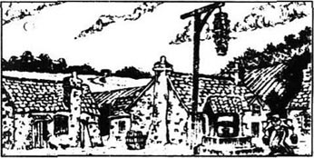
在圣安东尼得法热先生的酒店里，顾客们来来往往络绎不绝。他们来这儿喝点清淡的粗制葡萄酒，但他们更多的是来这儿聆听和交谈的，还有等候消息的。
一天，店里的顾客比平常要多。得法热已经出去3天了。当他那天早上回来时，他带回来了一个陌生人，一个修路工。
“夫人，”得法热对他的妻子说，“这个人叫雅克，他已经和我一起走了很长一段路。”有一个顾客这时起身走了出去。“这个修路工，”得法热接着说，“叫雅克，是个好人。给他来点喝的吧。”第二个人起身走了出去。那个修路的人坐了下来喝酒。第三个人起身走了出去。
“喝完了吗，我的朋友？”得法热说，“那就过来看看我答应给你的房间吧。”
他们上了楼，来到马内特医生曾坐着做鞋子的房间。那三个刚才离开酒店的男人正在等着他们。得法热对他们说：
“没有名字。你们是雅克一，雅克二和雅克三。我是雅克四，这是雅克五。他给我们带来了我们可怜的朋友加斯珀的消息，一年前他的孩子被侯爵的马车轧死了。”
“我第一次看到加斯珀，”雅克五说，“是在侯爵的马车进村时，他扒在车底下。他跑掉了，但是那天晚上侯爵就被暗杀了。加斯珀失踪了，几星期前才被抓到。士兵们把他带到村子里绞死了他，而且他们把他的尸体吊在了村里的场地上。那是妇女们打水以及我们的孩子们玩耍的地方。”
雅克五走后，雅克一对他的朋友们说：“你们有什么说的呢？我们是不是该把他们的名字列在名单上？”
“是的，他们所有的名字。那个城堡里及所有埃弗蒙家族的人。”
“名单安全吗？”雅克二问。
“是的，我的朋友。”得法热说，“我老婆记得所有的事，不仅如此，每一个名字她都织到了毛线活儿里，绝不会被忘掉的。”
几天后，得法热把一些从他在警察局里的雅克朋友那儿得到的消息告诉了他妻子。
“一个新的间谍已被派到了圣安东尼，他叫巴萨德，约翰·巴萨德，是英国人。”
“他长得什么样？我们知道吗？”
“他大约40岁，个儿很高，黑头发，瘦脸庞。”得法热说。
“好的，”他老婆说，“我明天就把他记入名单中。只是你今晚上好像累了，而且有些伤心。”
“唉，”得法热说，“时间太长了。”
“准备变革就得花费时间。法国人的仇不可能一天就报完了。”
“但我们也许不会活着看到结果了。”
“即使是这样，”得法热夫人说，“我们也要尽力让它到来。但是我相信我们会看到我们对那些可恨的贵族们复仇的那一天。”
第二天，一个陌生人来到了酒店。立刻，得法热夫人便从桌上拿起一支玫瑰花插在了头发上。顾客们一看到这个动作便立刻停止了交谈，并一个接着一个从容地离开了酒店。
“你好，夫人。”陌生人说。
“你好，先生。”得法热夫人说。但她心里说：“大约40岁，高个儿，黑头发，瘦脸庞。对了，我知道你是谁，约翰·巴萨德先生。”
“生意好吗？”陌生人问。
“生意不好，人们太穷了。”得法热夫人抬起头看着门，“啊，这是我丈夫。”
“你好，雅克。”间谍说道。
“你错了，”得法热盯着他说，“那不是我的名字，我叫恩斯特·得法热。”
“那都一样，”间谍随口说道。“我记得你的一些事，得法热先生。马内特医生从巴士底狱出来后是你照顾他的。”
“是那样的。”得法热说。
“你常有马内特医生和他女儿的消息吗？他们现在在英国。”
“没有，很长时间都没有了。”
“她最近结婚了。不是嫁给一个英国人，而是一个法国人。如果你联想起可怜的加斯珀，这件事真是有趣。马内特小姐嫁给了被加斯珀杀死的侯爵的侄子，她的新婚丈夫实际上是新的侯爵。可他宁愿不为人知地住在英国。他在那里可不是侯爵，而只不过是查尔斯·代尔那。”
得法热先生听到这个消息后心里不高兴。在间谍走后，他对妻子说：“这会是真的吗？如果是，我希望马内特小姐让她的丈夫远离法国。”
“谁知道会发生什么？”得法热夫人回答说，“我只知道埃弗蒙这个名字在我的名单上，而且有充分的理由。”她继续平静地织着毛线活儿，把一个又一个的名字织进人民公敌名单中。
时间流逝着，得法热夫人仍旧在编织着。圣安东尼的妇女们也都在织着。雅克和他的兄弟们饥饿削瘦的脸变得越来越灰暗，也越来越愤怒。巴黎即将到来的暴风雨的隆隆雷声已愈来愈响了。
事情开始于夏季的一天，在圣安东尼得法热酒店四周的街道上聚集了大队的人群。他们拿着枪、刀、棍子，甚至石头，即一切可以作为武器的东西。他们狂呼怒吼着，准备好去战斗，去牺牲。
“朋友们、公民们！”得法热喊道，“我们做好了准备！向巴士底狱进军！”人群开始移动，像海浪般汹涌向前。
“跟着我，妇女们！”得法热夫人喊道。一把明晃晃的长尖刀在她手中挥舞着。“我们也能像任何男人一样去杀人！”
愤怒的人海穿过圣安东尼冲向了巴士底狱。很快，这让人痛恨的监狱便响起了战斗的声音。烈火和浓烟窜上了高大的石头墙，雷鸣般的炮声在城市中回响。
恐怖而暴烈的4个小时之后，城墙上出现了一面白旗，城门被打开了。巴士底狱已经被巴黎人民攻占了！很快人群便拥入其中，他们呐喊着“释放犯人！”但是得法热把他结实的手放在了一个士兵肩上。
“指给我‘北塔’，带我去北塔105！快！”
“跟我来。”那个吓坏了的家伙说道。得法热和雅克三随他走过黑暗的监狱，路过了沉重紧锁的门，上了石头台阶，来到一个低矮的门前。这是一个狭小的房间，黑暗的石墙上只有一个很小的窗户，它很高，没人能够着它往外看。得法热顺着墙仔细地查看着。
“这儿，看这儿，雅克三。”他嚷道。
“A.M.！”雅克小声念道。
“A.M.，亚历山大·马内特。”得法热轻声说，“我们现在走吧。”但在他们离开之前，他们细心地搜索了一遍房间和家具，寻找着细小的隐藏之处。
然后他们返回到下面的人群中。巴士底狱及其官员们都在人民的手中了，他们要报仇雪恨，要血债血偿。
“最终，它总算开始了，亲爱的。”得法热对他的妻子说。这天是1789年的7月14日。
在侯爵生活和加斯珀死去的那个村庄，生活很艰难。一切东西都是衰老、疲惫和残缺的，包括村民、土地、房屋、牲畜。过去，所有的人力和物力都得为侯爵效劳，而且得不到任何回报。
但是现在，陌生的人们在全国巡游。这些陌生人像当地人一样穷，但是他们谈论着新思想——那些源于巴黎的思想现在正像烈火一样燃遍全国。
那个把加斯珀的消息带到巴黎的修路人，仍旧在修着道路。一天，当他在村子外面的路上干着活儿时，一个陌生人朝他走来。
“雅克。”那个陌生人说。他握着修路人的手，并转身看着山上侯爵的城堡。
“就是今晚，雅克，”他接着平静地说道。“另外的人将要在这儿和我见面。”
那天晚上天很黑，而且风刮得很猛。没有人看见有4个人悄无声息地走向城堡。但是很快城堡就显露在黑暗的夜幕中。窗户明亮，烟雾和黄色的火焰直冲云天。加贝尔先生大声地喊着救命，但村子里的人们只是袖手旁观，没有采取任何行动去营救这座侯爵住过的城堡。
7 A call for help
7
A call for help
The troubles in France continued. The citizens of France had fought to win power, and now they used it. Castles were burned, laws were changed, and the rich and powerful nobles died—their heads cut off by that terrible new machine of death, the Guillotine. In Paris the King was put in prison, and in 1792 the people of France sent him to the Guillotine as well. The French Revolution was now three years old, but there were more years of terror to come.
Not all the rich nobles had died. Some had escaped to England; some had even sent or brought their money to London before the Revolution began. And Tellson's Bank, which the French emigrants used, had become a meeting-place where they could hear and talk about the latest news from France.
One wet August day Mr Lorry sat at his desk in the bank, talking to Charles Darnay. The years since Charles's marriage had seen the arrival of a daughter, little Lucie, who was now nine years old. Dr Manette had continued in good health, and at the centre of that warm family circle was always Lucie—a loving daughter, wife, mother, and a kind-hearted friend. Even Sydney Carton, though his old, bad ways were unchanged, was a family friend—and very much a favourite with little Lucie.
But at this moment Charles Darnay was trying very hard to persuade his old friend Mr Lorry not to go to France. 'It's too dangerous. The weather is not good, the roads are bad, think of your age,' he said.
'My dear Charles,' said the banker. 'You think that, at nearly eighty years of age, I'm too old. But that's exactly why I must go. I have the experience, I know the business. My work is to find and hide papers that might be dangerous to our customers. And anyway, Jerry Cruncher goes with me. He'll take good care of my old bones.'
'I wish I could go,' said Charles restlessly. 'I feel sorry for the people in France, and perhaps I could help them. Only last night, when I was talking to Lucie—'
'Talking to Lucie, 'repeated Mr Lorry. 'You talk about your lovely wife at the same time as you talk about going to France. You must not go. Your life is here, with your family.'
'Well, I'm not going to France. But you are, and I'm worried about you.'
Just at that moment a bank clerk put an old, unopened letter on Mr Lorry's desk, and Darnay happened to see the name on it: The Marquis of Evrémonde, at Tellson's Bank, London. Since his uncle's death, this was Darnay's real name. On the morning of his wedding to Lucie he had told Dr Manette, but the Doctor had made him promise to keep his name secret. Not even Lucie or Mr Lorry knew.
'We can't find this Marquis,' said the clerk.
'I know where to find him,' said Darnay. 'Shall I take the letter?'
'That would be very kind,' said Mr Lorry.
As soon as he had left the bank, Darnay opened the letter. It was from Monsieur Gabelle, who had been arrested and taken to Paris.
Monsieur, once the Marquis
I am in prison, and I may lose my life, because I worked for a landowner who has left France. You told me to work for the people and not against them, and I have done this. But no one believes me. They say only that I worked for an emigrant, and where is that emigrant? Oh Monsieur, please help me, I beg you!
This cry for help made Darnay very unhappy. After the death of the Marquis, he had told Gabelle to do his best for the people. But now Gabelle was in prison, just because he was employed by a nobleman. It was clear to Darnay that he must go to Paris. He did not think that he would be in danger, as he had done everything he could to help the people of his village. He hoped that he would be able to save his old servant.
That night Charles Darnay sat up late, writing two letters. One was to his wife, Lucie; the other was to her father, Dr Manette. He told them where he had gone and why, and he promised that he would write to them from France. He had left secretly, he wrote, to save them from worrying.
The next day he went out, without saying anything to them of his plans. He kissed his wife and his daughter, and said that he would be back soon. And then he began his journey to Paris.
When he arrived in France, Darnay found that he could travel only very, very slowly towards Paris. The roads were bad and every town, every village had its citizens with guns who stopped all travellers, asked them questions, looked at their papers, made them wait or threw them in prison, turned them back or sent them on their way. And it was all done in the name of freedom—the new Freedom of France.
Darnay soon realized that he could not turn back until he had reached Paris and proved himself to be a good citizen, not an enemy of the people.
On his third night in France he was woken by an official and three other men with guns.
'Emigrant,' said the official. 'These three soldiers will take you to Paris, and you must pay them.'
Darnay could only obey and at three o'clock in the morning he left with three soldiers to guard him. Even with them he was sometimes in danger; the people in the towns and villages all seemed to be very angry with emigrants, but finally they arrived safely at the gates of Paris. Darnay had to wait a long time while officials carefully read his papers, which explained the reasons for his journey. One official, seeing Gabelle's letter, looked up at Darnay in great surprise, but said nothing. Another official asked roughly:
'Are you Evrémonde?'
'Yes,' replied Darnay.
'You will go to the prison of La Force!'
'But why?' asked Darnay. 'Under what law?'
'We have new laws, Evrémonde,' said the official sharply, 'and emigrants have no rights. You will be held in secret. Take him away.'
As Darnay left, the first official said quietly to him, 'Are you the man who married the daughter of Dr Manette?'
'Yes,' replied Darnay in surprise.
'My name is Defarge and I have a wine-shop in Saint Antoine. Perhaps you have heard of me.'
'Yes. My wife came to your house to find her father.'
'Why did you come back to France? It will be very bad for you.'
Darnay was taken to the prison of La Force and put in a cold empty room with a locked door and bars across the windows. He thought of Dr Manette and his many years alone, forgotten, in the Bastille.
'Now I, too, have been buried alive,' he thought.
cut off remove by cutting. 切去。
revolution n. complete change. 革命，改变。
emigrant n. person who goes away from one's own country to another to settle there. 移民。
favourite n. a specially preferred person. 最被喜爱的人。
persuade v. convince. 劝说，说服。
bone n. one of the parts that make up the frame work of an animal's body. 骨头。
happen to occur by chance. 碰巧。
secret adj. kept from the knowledge or view of others. 秘密的。
arrest v. seize by the authority of the law. 拘捕。
employ v. give work to, usu. for payment. 雇用。
be able to have the power, means, or opportunity to do sth. 有能力做某事。
journey n. going to a place. esp. a distant place. 旅行。
travel v. make journeys. 旅行。
freedom n. condition of being free. 自由。
prove v. supply proof of. 证明。
perhaps adv. possibly. 可能，也许。
prison n. building in which wrongdoers are kept locked up. 监狱。
empty adj. having nothing inside. 空的。
bury v. place in the ground, in a grave, or in the sea. 埋葬。
求救
7 求救
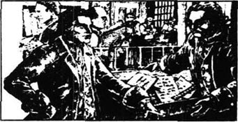
法国的风暴在继续着。法国的公民们曾为争得权力而战斗，现在他们可以使用权力了。城堡被烧掉，法律被改换，那些有钱有势的贵族死了：他们的脑袋被那可怕的新死亡机器——断头台给砍掉了。在巴黎，国王被投进了监狱。1792年，法国人民把他也送上了断头台。法国大革命到现在已3年了，但是恐怖还要持续更长的岁月。
并非所有的有钱贵族都已死了，他们有一些逃到了英国；有一些在大革命开始之前就已把他们的钱财带到或寄到了伦敦。台尔森银行为法国移民所利用，现在它已经成了他们聚集在一起打听和谈论从法国来的最新消息的场所。
8月里一个潮湿的日子，劳里先生坐在他银行里的办公桌旁和查尔斯·代尔那交谈。查尔斯婚后已有了一个女儿小路茜来到世上。现在她已经9岁了。马内特医生的身体一直很健康。这个温馨的家庭的中心始终是路茜——一个让人喜欢的女儿、妻子、母亲和善良的朋友。甚至西得尼·卡登，虽然他原先那些不好的生活方式并未改变，也是这个家庭的朋友——而且是小路茜最喜爱的人。
但在此刻，查尔斯·代尔那正竭力说服他的老朋友劳里先生不要去法国。“那太危险了，天气也不好，路也难走，还有您的年纪。”他说。
“我亲爱的查尔斯，”银行家说，“你认为我快80岁了，所以太老了，但这正是我必须去的原因。我有经验，也懂业务。我的工作是去找到并收藏有可能对我们的客户有危险的文件。况且还有杰里·克拉彻和我一起去，他会照顾好我这把老骨头的。”
“我希望我能去。”查尔斯不安地说，“我为法国人民难过，也许我能帮助他们。只是昨天夜里，我和路茜谈起的时候——”
“和路茜谈，”劳里先生重复道。“你谈起去法国一事的同时还谈起你可爱的妻子。你不能去，你的生活在这儿，和你的家人在一起。”
“好吧，我不去法国了。但是你却要去，我是为你担心。”
就在这时一个银行职员把一封旧的，没有打开的信放在了劳里先生的桌子上。代尔那正巧看见了信封上的名字，上面写着：伦敦，台尔森银行，埃弗蒙侯爵。在他叔叔死后，这就成了代尔那真正的名字。在他和路茜举行婚礼的那天早晨他就告诉了马内特医生，但是医生让他发誓将他的名字保密。所以，甚至路茜和劳里先生都不知道。
“我们找不到这个侯爵。”那个职员说。
“我知道上哪儿去找他。”代尔那说，“可以把这封信给我吗？”
“那真是太好了。”劳里先生说。
一离开银行，代尔那就打开了信。信是加贝尔先生写来的，他已经被抓了起来而且被送到了巴黎。
先生，前侯爵：
我在监狱里，而且也许会丧命，罪名是我曾为一个离开了法国的地主效劳。您曾告诉我要为人民效力而且不要反对他们，我这样做了，但是没有人相信我。他们只说我是为一个流亡者效力。还有就是那个流亡者在哪儿？啊，先生，请帮帮我吧，求求您了！
这个求救的哭诉使代尔那十分难受。侯爵死后，他就告诉过加贝尔要尽自己最大的努力去帮助人民，但是现在加贝尔进了监狱，仅仅因为他受雇于一个贵族。代尔那清楚自己必须去一趟巴黎。他认为自己不会有危险，因为他已尽力去帮助过他的村民们。他希望他能搭救老仆人。
那天晚上查尔斯·代尔那熬夜熬到很晚，写了两封信，一封给他的妻子路茜，另一封给他的岳父马内特医生。他告诉了他们他要去哪儿以及为什么要去，并许诺他会从法国写信给他们。他之所以不辞而别，他写道，是为了不让他们担心。
第二天他走时，没有提起任何有关他计划的事。他吻了妻子和女儿，而且说他很快就会回来，然后他就开始了他的巴黎之旅。
到了法国以后，代尔那发现他的巴黎之行只能异常缓慢地进行。路况很糟，而且每个城镇、每个村庄都有拿枪的公民拦截任何过往的行人。他们盘问，查看他们的证件，让他们等候着或把他们送进监狱，让他们返回或押送他们上路。
这一切都是在自由的名义下干出来的——新式的法兰西自由。
代尔那很快意识到在他去巴黎并证明自己是个好公民而不是人民的敌人之前，他是回不去了。
在他到法国的第三天晚上，他被一个官员和另外三个荷枪的人弄醒了。
“流亡者，”那个官员说，“这三个士兵将把你带到巴黎，你必须付给他们钱。”
代尔那只得从命，早上三点时他就和三个保护他的士兵离开了。即使跟他们在一起，他也不时地陷入危险，城里和村子里的人们似乎全都非常痛恨流亡者，但最后他们总算安全到达了巴黎的城门。在官员们仔细地看他的证件时，代尔那不得不等了很长时间。这些证件是用来说明他为什么来法国的。当一个官员看了加贝尔的信后，大为吃惊地抬头看着代尔那，但是没说什么。另一个官员粗暴地问道：
“你是埃弗蒙吗？”
“是的。”代尔那回答。
“你要进拉弗尔斯监狱。”
“可是为什么？”代尔那问，“依据什么法律？”
“我们有了新的法律，埃弗蒙，”那个官员厉声说，“流亡者没有权利；你将被秘密关押起来。把他带走！”
代尔那正要走，第一位官员悄声问他：“你是和马内特医生的女儿结婚的那个人吗？”
“是呀。”代尔那惊讶地回答。
“我叫得法热，我在圣安东尼有一家酒店，也许你听说过我。”
“是的，我妻子曾去你家里找回了他父亲。”
“你为什么要回法国呢？这对你太糟糕了。”
代尔那被送进了拉弗尔斯监狱，而且被关进一个寒冷而空荡的房间。门上了锁，窗户封了铁条。他想起了马内特医生在巴士底狱里多年孤独和被人遗忘的日子。
“现在，我也被活埋了。”他想着。
8 In the hands of the citizens
8
In the hands of the citizens
Tellson's Bank in Paris was in a large building south of the river, close to the heart of the city. Mr Lorry had arrived in Paris some days before Charles Darnay, and was now living in some rooms above the bank. One evening, looking out of the window, he saw that a large grindstone had been brought into the square below. There was a wild, shouting crowd around it, busy sharpening their knives and swords and axes, which were already red with blood. With shaking hands, Mr Lorry closed the window.
He had decided to go downstairs and talk to the bank guards, when suddenly the door of his room opened, and Lucie and her father ran in.
'Lucie! Manette! What has happened? Why are you here?' cried Mr Lorry.
'Charles is in Paris,' cried Lucie. 'He came to help an old family servant. But he's been taken to prison.'
At that moment the shouts of the crowd outside grew louder.
'What is that noise?' asked the Doctor.
'Don't look out!' cried Mr Lorry.
'My friend,' said the Doctor. 'I am safe in Paris. I was a prisoner in the Bastille. Everybody knows about me and how I suffered. Already people want to help me; they gave us news of Charles.'
'Even so, don't look outside. Where is Charles?'
'In the prison of La Force.'
'La Force! Dear Lucie, you can do nothing tonight. You must go to one of the rooms here and wait. I must talk with your father at once.'
Lucie kissed him and left the room.
'Quick, Manette,' said Mr Lorry. 'These people outside, with their bloody knives, are murdering the prisoners. If you are so well known, if you have this power, talk to them. Tell them who you are, and go to La Force. Quick, before it is too late!'
Dr Manette hurried outside. Mr Lorry watched from the window as the Doctor talked to the crowd. He heard shouts of 'Long live the Bastille prisoner! Help his friend in La Force!'
Mr Lorry went to Lucie and found her with her daughter and Miss Pross. Together they waited all night for news, but none came.
In the morning Mr Lorry found rooms for Lucie and her family in a quiet street near the bank. He left Jerry Cruncher with them as a guard, and returned worriedly to Tellson's. At the end of the day a strong, serious man came to see him.
'My name is Defarge. I come from Dr Manette; he gave me this.' Defarge gave him a piece of paper.
The Doctor had written, Charles is safe, but I cannot leave this place yet. Take Defarge to Lucie.
'Come with me,' said Mr Lorry happily. They went downstairs and at the front door found Madame Defarge, knitting. Without a word, she joined them, and Mr Lorry led them to Lucie's rooms.
There, Defarge gave Lucie a note from her husband.
Dearest—be brave. I am well, and your father has some power here. You cannot answer this, but kiss our child for me.
Only a short letter, but it meant so much to Lucie. Gratefully, she kissed the hands of Defarge and his wife. Madame Defarge said nothing; her hand was cold and heavy, and Lucie felt frightened of her.
Miss Pross came in with little Lucie.
'Is that his child?' asked Madame Defarge, stopping her knitting to stare.
'Yes, Madame,' said Mr Lorry. 'That is our poor prisoner's little daughter.'
'It is enough, my husband,' said Madame Defarge. 'We can go now.' Her voice was as cold as her hand.
'You will be good to my husband?' asked Lucie, afraid. 'I beg you, as a wife and mother.'
'We have known many wives and mothers,' said Madame Defarge. 'And we have seen many husbands and fathers put in prison, for many years. What is one more, among so many?'
As the Defarges left, Lucie turned to Mr Lorry. 'I am more afraid of her than of any other person in Paris, 'she whispered. Mr Lorry held her hands; he did not say anything, but he was also very worried.
The Doctor did not come back from La Force for several days. During that time eleven hundred prisoners were killed by the people. Inside the prison Dr Manette had come before a Tribunal, which was a group of judges appointed by the people. These judges made their own laws and threw prisoners out into the streets to be murdered by the crowds. Dr Manette told the Tribunal that he had been a prisoner in the Bastille for eighteen years, and that his son-in-law was now a prisoner in La Force. The Tribunal had agreed to keep Charles Darnay safe from the murdering crowds, but they would not let him leave the prison.
Dr Manette seemed to become stronger as he lived through these terrible days, doing everything he could to save his daughter's husband. He was able to see Darnay regularly, but noblemen and emigrants were hated by the citizens of new France, and the Doctor could not set Darnay free. The Guillotine, that new machine of death, cut off the heads of many, many people—the powerful and the cruel, but also the beautiful, the innocent, and the good. Each day Lucie did not know if her husband would live or die. She lived every moment in great fear, but her father was sure that he could save his son-in-law.
One year and three months passed and Darnay was still in prison. Dr Manette now had an official job as doctor to three prisons and was able to visit Darnay regularly. He became more and more loved by the rough people of the Revolution. But the Guillotine continued to kill.
'Try not to worry,' he told Lucie. 'Nothing can happen to Charles. I know that I can save him.' But Lucie could not see him or visit him; she could not even write to him.
On the day when Charles Darnay was at last called for his trial, Lucie and Dr Manette hurried to Tellson's Bank to tell Mr Lorry. As they arrived, a man got up and disappeared into another room. They did not see who it was, but in fact it was Sydney Carton, just arrived from London.
There were five judges in the Tribunal, and the trials were short and simple. The voices of truth, honesty, and calm reason were never heard at these trials, and most of the prisoners were sent to the Guillotine, which pleased the noisy crowds. Fifteen prisoners were called before Darnay that day, and in no more than an hour and a half, all of them had been condemned to death.
'Charles Evrémonde, who is called Darnay.'
As Darnay walked in front of the judges, he tried to remember the careful advice that Dr Manette had given him.
'Charles Evrémonde, you are an emigrant. All emigrants must die. That is the new law of France.'
'Kill him!' shouted the people. 'Cut off his head! He's an enemy of the people!'
The President of the judges asked Darnay, 'Is it true that you lived many years in England?'
'Yes, that is true,' replied Darnay.
'So you are an emigrant, surely.'
'No, not in the meaning of the law,' replied Darnay. 'I earn my own living in England. I have never wanted or used the name of Marquis, and I did not want to live by the work of the poor people of France. So I went to live and work in England, long before the Revolution.'
'And did you marry in England?'
'Yes, I married a Frenchwoman. The daughter of Dr Manette, a prisoner of the Bastille and a well-known friend of all good citizens!'
These words had a happy effect on the crowd. Those who had shouted for his death now shouted for his life. Then Monsieur Gabelle and Dr Manette spoke for Charles Darnay. The Doctor spoke well and clearly, and was very popular with the crowd. When he had finished, the judges decided that the prisoner should be set free, and the crowd shouted their agreement loudly. Soon they were carrying Darnay in a chair through the streets of Paris to Dr Manette's house. Lucie was waiting there, and when she ran out and fell into the arms of her husband, the men and women in the crowd kissed one another and danced for happiness. Darnay and Lucie were together again, safe and happy.
'I told you that I would save him,' said Lucie's father proudly. 'Well, I have saved him, and you must not worry now.'
But Lucie was still worried. So many innocent men and women had died, for no reason, and every day brought more deaths. A shadow of fear and hate lay over France, and no one knew what dangers the next day would bring.
* * *
It was not possible to leave Paris at once, as Charles did not have the necessary papers. They must live quietly, and hope to leave as soon as they could.
But that night, when Dr Manette, Charles and Lucie were sitting together, they heard a loud knock at the door.
'What can this be?' said Lucie, trembling. 'Hide Charles! Save him!'
'My child,' said the Doctor, 'I have saved him. He is a free man!'
But when he opened the door, four rough men pushed their way into the room.
'The Citizen Evrémonde, where is he? He is again the prisoner of the people.'
'I am here,' said Darnay. 'But why am I again a prisoner?'
'You are accused by citizens of Saint Antoine.'
Dr Manette had said nothing. He seemed to be made of stone, but suddenly he spoke.
'Will you tell me who has accused my son-in-law?'
'I shouldn't tell you this,' said one of the men, 'but Citizen Evrémonde, called Darnay, is accused by Monsieur and Madame Defarge, and by one other person.
'What other?'
'You will hear that tomorrow,' replied the man.
grindstone n. stone shaped like a wheel, turned on an axle, used for sharpening tools. 磨石。
sharpen v. make or become sharp. 使尖锐。
prisoner n. person who kept in prison for crime or until tried in a law-court. 犯人.
bloody adj. bleeding, covered with blood. 流血的。
guard n. soldier or party soldiers keeping guard. 哨兵。
serious adj. thoughtful, not given to pleasure seeking. 严肃的，庄重的。
join v. become a member of. 参加，加入。
beg v. ask earnestly, or with deep feeling. 恳求。
put in cause to be in. 使在内。
among prep. 在……中。
several adj. some. 几个的，数个的。
judge n. 法官。
appoint v. choose and name. 任命。
continue v. go on doing. 继续。
disappear v. be seen no more. 消失。
honesty n. the quality of being honest, freedom from cheating. 诚实。
calm adj. quiet 平静的。
condemn v. sentence to (a punishment, esp. death). 判罪。
president n. head of some government department. 政府机构首长。
earn v. get in return for work or as a reward for one's qualities. 挣得，赚。
popular adj. liked and admired. 受爱慕的。
accuse v. say that sb. has done wrong, broken the law, is to be blamed. 控告。
knock n. short, sharp sound of a blow. 打，敲。
在公民们的手里
8 在公民们的手里
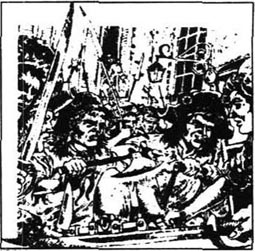
巴黎的台尔森银行在河南岸的一座大楼里，接近市中心。劳里先生已先于查尔斯·代尔那几天到达巴黎，现在正住在银行楼上的几间房里。一天傍晚，他朝窗外看时，见到一块巨大的磨石被人扛到了楼下的场地上。一群疯狂、呼叫着的人正围着它。他们忙着磨刀、剑和斧子，这些利刃已经被血染红了。劳里先生颤抖着双手关上了窗户。
他本来决定下楼去和银行卫兵谈谈的，却见房门被突然打开，路茜和她的父亲跑了进来。
“路茜！马内特！发生了什么事？你们怎么来了？”劳里先生喊道。
“查尔斯现在在巴黎，”路茜嚷道。“他来这儿是要营救一位老仆人的，可他现在已被关进了监狱。”
这时候外面人群的喊声更大了。
“那些声音是怎么回事？”医生问。
“别往外看！”劳里先生大声说。
“我的朋友，”医生说，“在巴黎我是安全的。我曾是巴士底狱的一个囚徒，所有的人都知道我以及我是怎么受苦的。人们愿意帮助我，他们给了我们有关查尔斯的消息。”
“即便这样，也别往外看。查尔斯在哪儿？”
“在拉弗尔斯监狱。”
“拉弗尔斯监狱！亲爱的路茜，你今天晚上是无能为力的了，你得待在这儿的一间房子里等着，我必须马上和你父亲谈谈。”
路茜吻了他后便离开了房间。
“快，马内特，”劳里先生说，“外面的这些人正拿着血淋淋的刀子要去杀囚犯。如果你这么有名气，如果你有这个力量，就去和他们谈谈，告诉他们你是谁，然后去拉弗尔斯。快，趁现在还不晚！”
马内特医生赶紧出去了。劳里先生从窗户看见医生对着人群讲话。他听到人们高喊“巴士底狱的囚犯万岁！要帮助他在拉弗尔斯里的朋友！”
劳里先生去见路茜，发现她和她的女儿及普罗丝小姐在一起。他们在一起等了整整一夜的消息，可是什么也没有等到。
早上劳里先生在银行附近一条安静的大街上为路茜和她的家人找到了房子。他留下杰里·克拉彻做保卫，然后焦急地回到了台尔森银行。白天快要过去时，来了一位强壮而严肃的人要见他。
“我叫得法热，我从马内特医生那儿来，他给了我这个。”得法热给他一张纸条。
医生写的是：查尔斯安全，但我还不能离开这儿。带得法热见路茜。
“跟我来。”劳里先生高兴地说。他们下了楼并在前门见到了正在织着毛线活儿的得法热夫人。她没说什么便跟上他们。劳里先生便领他们来到路茜的房间。
得法热在这儿给了路茜一张她丈夫写的纸条。
“亲爱的——勇敢些。我很好，你父亲在这儿有一些影响。你不能回信，但要替我亲亲我们的孩子。”
只是一封短信，但对路茜来说则意味着太多的东西。路茜感激地吻了得法热和他妻子的手。得法热夫人什么话也没说，她的手冰冷而沉重，路茜对她感到害怕。
普罗丝小姐和小路茜一起走了进来。
“那是他的孩子吗？”得法热夫人问，同时停下了编织的活儿，拿眼盯着小路茜。
“是的，夫人，”劳里先生说，“那是我们可怜的囚犯的小女儿。”
“这就够了，我的丈夫，”得法热夫人说，“我们现在可以走了。”她的声音像她的手一样冰冷。
“您会善待我的丈夫吗？”路茜害怕地问，“我恳求您，以一个妻子和母亲的名义。”
“我们知道很多的妻子和母亲，”得法热夫人说，“并且我们也见过很多的丈夫和父亲被送进监狱关押了好多年。有这么多的人，再多一个又算得了什么呢？”
当得法热夫妇走后，路茜冲劳里先生转过身去。“在巴黎，没有比她更使我害怕的人了，”她小声说。劳里先生抓住她的手，什么也没说，但是也很担心。
已有好几天了医生还没从拉弗尔斯回来。就在那段时间里有1100名囚犯被人杀死了。在监狱里马内特医生曾前去见一个审判团，一组由人民指定的法官。这些法官们制定了自己的法律，并把罪犯们扔到大街上让人们处死。马内特医生告诉审判团他曾经在巴士底狱当了18年的囚徒，而现在他的女婿在拉弗尔斯蹲监狱。审判团同意保护查尔斯·代尔那不受街上人群的伤害。但他们不准他离开监狱。
在这些恐怖的日子里生活，马内特医生似乎变得更强健了，竭尽全力地去救他的女婿。他经常能看到代尔那，但贵族和流亡者是遭到新法兰西公民的痛恨的，医生无法救代尔那出来。那座断头台——那新的死亡机器，砍掉了许许多多权贵和暴虐者的人头。但也有美丽、无辜且善良的人被斩首。每天路茜都不知道她丈夫会活下来还是会死去，她每一刻钟都生活在恐惧中，可她的父亲相信他能救出女婿。
一年零三个月过去了，代尔那仍然在监狱里。马内特医生现在有了一个官方工作，那就是做三个监狱的医生，于是他可以经常去看代尔那。他越来越被那些粗鲁的革命者所喜爱了，但是断头台仍旧在杀人。
“尽量别去担心，”他告诉路茜说，“查尔斯不会有什么事的。我知道我能救他。”可路茜不能见他或去探望他，甚至不能给他写信。
在查尔斯·代尔那最终被审讯的那天，路茜和马内特医生匆忙到台尔森银行告诉了劳里先生。他们到达时，有一个人站起身来消失在另一个房间里。他们没有看清那是谁，但实际上他是西得尼·卡登，他刚从伦敦来。
审判团由5名法官组成，审判很简短。在这些审判中，真实、诚实、合理的申辩根本不被听取，因而大多数罪犯都被送上了断头台，以取悦那些吵吵嚷嚷的人们。那天在代尔那之前已有15个人被审讯，在不到一个半小时的时间中，他们便都被判处了死刑。
“查尔斯·埃弗蒙，那个称作代尔那的人。”
在走到法官面前时，代尔那尽力去回想马内特医生给他的周详的忠告。
“查尔斯·埃弗蒙，你是个流亡者。所有的流亡者都得死，这是法兰西的新法律。”
“杀了他！”人们喊着，“砍下他的头！他是人民的敌人！”
首席法官问代尔那：“你在英国住了很多年，这属实吗？”
“是的，属实。”代尔那答道。
“那么你肯定是个流亡者啰。”
“不，按法律规定不是的，”代尔那回答，“我在英国自谋生计，从来没有要过或用过侯爵的称号，我也不曾想过要靠可怜的法国人民的劳作而生活，所以我才去英国生活和工作的，这是革命之前很久的事了。”
“那么你在英国结婚了吗？”
“是的，我娶了一个法国女人，是马内特医生的女儿。他是巴士底狱的囚犯，是所有好公民的知名朋友！”
这些话在人群中产生了好的影响，那些刚才还嚷着要他死的人现在又嚷着要他活下来。后来加贝尔先生和马内特医生也都为查尔斯·代尔那说话。医生说得很好又很清楚，而且他很受人们的欢迎。在他结束了讲话后，法官们决定释放囚犯。人们也大声喊着同意，很快他们便用椅子抬着代尔那穿过巴黎的街道去了马内特医生住的屋子。路茜正在那儿等着，当她冲出来投入她丈夫的怀抱时，人群中的男男女女互相亲吻并为他们的幸福而起舞。代尔那和路茜又安全幸福地待在了一起。
“我告诉过你我会把他救出来的，”路茜的父亲骄傲地说，“好了，我已经救出了他，你就不用再担心了。”
但是路茜仍旧担心。已有那么多无辜的男男女女毫无道理地死了，并且每天都有更多的人死亡。恐惧和仇恨的阴影笼罩着法国，没有人知道明天会带来什么危险。
查尔斯不能马上离开法国，因为没有拿到必须的证件。他们必须静悄悄地生活，并寄希望于能尽快离开。
但是那天晚上，当马内特医生、查尔斯和路茜正在一起坐着时，他们听到了很响的敲门声。
“会是什么人呢？”路茜颤抖着说，“把查尔斯藏起来，救救他！”
“我的孩子，”医生说，“我已经救回了他。他现在是个自由人！”
但是当他打开门时，四个粗壮的人闯进了房间。
“公民埃弗蒙，他在哪儿？他又成了人民的囚徒了。”
“我在这儿，”代尔那说，“可是我为什么又成了犯人呢？”
“圣安东尼的公民们指控你了。”
马内特医生没有说什么。他仿佛成了一个木头人；但他突然说道：
“你能告诉我谁指控我的女婿吗？”
“我本不该告诉你的，”其中一个人说，“可是公民埃弗蒙，即所谓的代尔那是被得法热先生及夫人还有另外一个人指控的。”
“另外那个人是谁？”
“你明天就会听到了。”那个人说。
9 The spy
9
The spy
While this was happening, Miss Pross was out shopping for the family. Jerry Cruncher was with her, and they had just gone into a wine-shop when Miss Pross suddenly stopped, looked at one of the customers, and cried our in a loud voice,
'Oh Solomon, dear Solomon! I've found you at last, dear brother! But whatever are you doing here in Paris?'
'Don't call me Solomon. You'll get me killed. Pay for your wine, and come outside,' said the man in a low, frightened voice.
They went outside. 'You mustn't recognize me here,' said the man. 'It's not safe. Go your way, and let me go mine.'
Miss Pross began to cry at these unbrotherly words, and Jerry Cruncher stepped forward to stare in the man's face.
'Wait a minute,' said Jerry. 'Is your name John Solomon, or Solomon John? Your sister calls you Solomon. I know that your name's John; I remember that. But your other name wasn't Pross at that old Bailey trial. What was your name then?'
'Barsad!' said another voice.
'Yes, Barsad, that's it,' cried Jerry. He turned round and saw Sydney Carton standing behind him.
'Don't be alarmed, my dear Miss Pross,' said Carton, smiling at her. 'But I'm afraid I have to tell you that your brother is a spy, a spy for the French prisons.'
Solomon Pross, also Barsad, went pale. 'That's not true!'
'I saw you come out of the Conciergerie today. I followed you,' said Carton, 'and I found out what you do. And I've decided that you may be able to help me. Come with me to the office of Mr Lorry.'
After a short argument, which Carton won, Barsad followed him to Mr Lorry's office.
'I bring bad news,' Carton said to Mr Lorry. 'Darnay has been arrested again.'
'But I was with him only two hours ago,' cried Mr Lorry. 'He was safe and free!'
'Even so, he has been arrested and taken to the Conciergerie. And I'm not sure that Dr Manette's good name can save him this time. So we must have Mr Barsad's help.'
'I will not help you,' said Solomon Pross, called John Barsad.
'Oh, I think you will,' said Sydney Carton, 'when you hear what I could say about you. Let's think. Mr Barsad is a spy, and a prison guard, but he used to be a spy in England. Is he still paid by the English?'
'No one will listen to you,' said Barsad.
'But I can say more, Mr Barsad,' replied Carton.
Barsad had more problems than Carton knew. He could not return to England because he was wanted by the police there. And in France, before he became a prison guard for the citizens' revolution, he had been a spy for the King's officers. He knew that Madame Defarge, that terrible woman, had knitted his name into her list of enemies of the people. Most of those on her list had already been killed by the Guillotine, and Barsad did not want to be next.
'You seem worried, Mr Barsad,' said Carton calmly.
The spy turned to Mr Lorry. 'Miss Pross is my sister, sir. Would you send her brother to his death, sir?'
'The best thing for your sister, Mr Barsad,' said Carton smoothly, 'is not to have a brother like you. I think I will inform the Tribunal that I suspect you of spying for England. You will be condemned at once,I am sure.'
'All right,' Barsad said slowly, 'I'll help you. But don't ask me to do anything that will put my life in danger, because I won't do it.'
'You're a guard at the Conciergerie prison, where Darnay is, aren't you?' said Carton. 'Come, let us talk privately in the next room.'
When Mr Carton returned alone, Mr Lorry asked what he had done.
'Not much,' replied Carton, 'but if it goes badly for Darnay tomorrow, I can visit him once. It's all I could do.'
'But that will not save him,' cried Mr Lorry sadly.
'I never said it would.'
Mr Lorry was an old man now, with a life of hard work behind him. Tears filled his eyes as he realized he could do nothing to help Lucie and her father now.
Sydney Carton felt very sorry for Mr Lorry. 'You're a good friend of Dr Manette and his daughter, but don't tell them about me or this meeting. It can't help Lucie.' He paused. 'Will you go back to London soon?'
'Yes, my work for Tellson's Bank here is finished. I have the necessary papers to leave Paris. I was ready to go tomorrow.'
'Then don't change your plans,' said Carton, very seriously.
Later that night Sydney Carton visited a shop in a quiet corner of Paris. He wrote on a piece of paper the names of several powders and gave it to the shopkeeper.
'For you, citizen?' asked the shopkeeper.
'Yes, for me.'
'You must be careful, citizen. Keep these things separate. You know what happens if you put them together.'
'Perfectly,' replied Carton.
He spent the rest of that night walking the streets of Paris. He watched the moon rise in the sky, he listened to the sounds of the River Seine flowing through the heart of the city, and he thought calmly about the past, and the future. He thought about all the deaths that the city had already seen... and he thought about Lucie's gentle, loving face and her sad, sad eyes.
recognize v. know, identify again that one has seen, heard, etc. 认识，认出。
step v. move the foot, or one foot after the other. 走，跨步。
argument n. arguing, reasoning. 争论。
follow v. come or go after. 跟随。
smoothly adv. politely. 有礼貌地，温和地。
suspect v. feel doubt about. 怀疑。
privately adv. secretly. 秘密地。
fill v. make or become full. 充满。
realize v. be fully conscious of. 认识，了解。
pause v. make a pause. 暂停。
powder n. 粉，粉末。
future n. time to come. 将来。
separate adj. divided; not joined or united. 分开的。
间谍
9 间谍
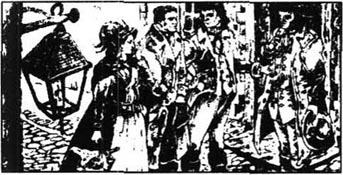
发生这件事的时候，普罗斯小姐正出去为全家采购东西去了。杰里·克拉彻和她在一起，他们刚好进了一家酒店。普罗斯小姐突然站住，看着一位顾客大声喊道：
“噢，所罗门，亲爱的所罗门！我终于找到你了，亲爱的弟弟！你怎么会在巴黎呢？”
“别叫我所罗门，你会让我丧命的。把酒钱付了，然后出来。”那个男人因害怕而低声地说道。
他们来到了外面。“你在这儿千万不要同我相认，”那个男人说，“这不安全。你走你的路，我也走我的路。”
面对这毫无姐弟之情的话，普罗斯小姐哭了起来。杰里·克拉彻走上前来盯着这个男人的脸。
“等一等，”杰里说，“你是叫约翰·所罗门，还是叫所罗门·约翰？你姐姐叫你所罗门，我知道你的名字是约翰。我还记得这一点。但你在旧巴勒的审判会上有另外一个名字，不是普罗斯，你那时叫什么来着？”
“巴萨德！”另一个声音说道。
“是的，巴萨德，就是这个。”杰里喊道。他转过身去看见西得尼·卡登正站在他身后。
“别惊慌，亲爱的普罗斯小姐，”卡登对她微笑着说，“只是我得告诉你你弟弟是个间谍，是为法国监狱工作的间谍。”
所罗门·普罗斯，也就是巴萨德的脸变得苍白。“那不是真的！”
“我今天看见你从贡赛杰里①那儿出来。我跟踪你来着，”卡登说，“而且我发现了你是干什么的，我想你或许能帮我。跟我去劳里先生的办公室吧。”
经过短暂的争执，卡登先生胜了，巴萨德跟着他到了劳里先生的办公室。
“我带来了一个坏消息，”卡登对劳里先生说，“代尔那又被抓起来了。”
“可两小时前我还和他在一起的。”劳里先生嚷道。“他当时既安全又自由。”
“尽管这样，他还是已经被抓了起来并被带到了贡赛杰里。我也不知道这次马内特医生的好名声是否能救他。所以我必须得到巴萨德先生的帮助。”
“我不会帮你们的。”所罗门·普罗斯，即所谓的约翰·巴萨德说。
“哦，我想你会的。”西得尼·卡登说，“当你听我说了关于你的事后。让我们想一想，巴萨德先生是个间谍，也是一个监狱看守，但他在英国曾做过间谍。他现在是否还被英国人雇佣呢？”
“没人会听你的。”巴萨德说。
“但我还可以说更多的东西，巴萨德先生。”卡登回答。
巴萨德的麻烦事比卡登知道的还多。他之所以回不了英国是因为他被那里的警察所追捕，而且在法国，在他成为公民们的监狱看守之前，他曾为国王的官员们做过间谍。他知道得法热夫人，那个可怕的女人，已把他的名字织进了人民敌人的名单上了。她名单上的大多数人都已经死在了断头台上，而他可不想成为下一个。
“你似乎很担心，巴萨德先生。”卡登镇静地说。
间谍转向劳里先生说道：“普罗斯小姐是我的姐姐，先生。您难道会送她弟弟去死吗，先生？”
“对你姐姐来说最好的事情，巴萨德先生，”卡登平静地说，“就是没有了像你这样的弟弟。我想我得告知审判团，就说我怀疑你是英国的间谍。我相信你会被马上处决的。”
“好吧。”巴萨德慢慢地说道，“我会帮助你们，可是别想让我做任何有生命危险的事，因为我不会做的。”
“你是贡赛杰里监狱的看守，代尔那就在那里，是不是？”卡登说，“来，让我们在旁边的屋子里私下谈谈。”
当卡登先生一个人回来时，劳里先生问他都干了些什么。
“没干什么，”卡登回答，“只是如果明天代尔那的处境不妙的话，我就能再去看他一次。这就是我所能做的一切了。”
“但是那也救不了他。”劳里先生伤心地哭道。
“我从来没说那能救他。”
劳里先生现已年迈，他一生工作勤勤恳恳，当他意识到他现在无论如何也帮不了路茜和她父亲时，眼中溢满了泪水。
西得尼·卡登为劳里先生感到很难过。“您是马内特医生和他女儿的好朋友，但是别告诉他们有关我或这次会面的事。那帮不了路茜。”他停了停，说道：“你不久就要回伦敦吗？”
“是的，我在这儿的台尔森银行的工作已经结束了，我有离开巴黎所必须的证件，我准备明天就动身。”
“那么别改变计划。”卡登非常严肃地说。
那天晚上西得尼·卡登去了巴黎的一个寂静角落处的商店。他在一张纸上写下了几个药粉的名字并把它给了店主。
“是你用吗，公民？”店主问。
“是的，是我用。”
“你得小心，公民。把这些东西分开着放。你清楚如果把它们放在一起会发生什么事情的。”
“非常清楚。”卡登说道。
那天晚上剩下的时间他都用于漫步巴黎的街道。他看见月亮升起在天空中，听见塞纳河流经这个城市中心时的声响，他平静地想到了过去，还有未来。他想到了这个城市所经历过的死亡……他也想到了路茜那温柔、可爱的脸庞以及她悲伤、忧郁的眼睛。
注释
① 贡赛杰里：Conciergerie，巴黎裁判所附属监狱。
10 The secret paper
10
The secret paper
When Charles Darnay was led before the Tribunal the next morning, Dr Manette, Lucie and Mr Lorry were all there. The love in Lucie's eyes as she looked at her husband warmed Darnay's heart. It had the same effect on Sydney Carton, though no one saw him standing at the back of the room.
It was the same Tribunal who had let Darnay go free on the day before. But Revolution Laws were not as powerful as the anger of the people.
The President of the Tribunal asked, 'Who has accused Charles Evrémonde again?'
'Three voices,' he was told. 'He is accused by Ernest Defarge, by Teresa Defarge his wife, and by Alexandre Manette, Doctor.'
There was a great noise in the room when Dr Manette's name was heard. When the shouting stopped, Dr Manette stood, pale and trembling.
'President, this cannot be true. You know that the man who is accused, Charles Darnay, is my daughter's husband. My daughter and those who are dear to her are far more important to me than my life. Where is the liar who says that I accuse my daughter's husband?'
'Citizen Manette,' said the President, 'be calm. Nothing can be more important to a good citizen than the freedom of France.'
Defarge came forward to answer questions. He told how he had been at the Bastille at the beginning of the Revolution, when that hated prison had been taken by the citizens.
'I knew that Dr Manette had been kept in a room known as One Hundred and Five, North Tower. It was the only name he had when he came to me in 1775.I went to the room and, hidden in a hole, I found a written paper. It is in Dr Manette's writing.'
'Read it to us,' said the President, and the crowd fell silent and listened.
I, Alexandre Manette, write this in the Bastille in 1767. I have been here for ten long years and I write this in my secret moments, when I can.
One evening in December, 1757, I was walking by the River Seine and a coach stopped beside me. Two men got out and one asked me if I was Dr Manette. When I replied that I was, they asked me to go with them, and made it clear that I could not refuse.
The coach left Paris and stopped at a lonely house. I could hear cries coming from a room upstairs. When I went in, I saw a young woman lying on a bed. She was young and very beautiful. She was also very ill. She kept crying out, 'My husband, my father, and my brother!' Then she listened for a moment, and began once again, 'My husband, my father, and my brother...'
I gave the girl something to make her calmer, but her feverish screams continued. Then I turned to question the two men. They were clearly brothers, and their clothes and voices suggested that they were noblemen. But they took care to prevent me from learning their name.
Before I could speak, the older brother said carelessly, 'There is another patient.' In a different room, they showed me a boy of about seventeen. There was a sword wound in his chest and I could see at once that he was dying.
'How did this happen?' I asked.
'He's just a crazy young peasant. He came here shouting about revenge, and made my brother fight him.' The older brother's voice was cold and hard; he seemed to think the boy was less important than a horse or a dog.
The boy's eyes looked at me. 'Have you seen her... my sister?' It was hard for him to speak.
'I have seen her,' I replied.
'These rich nobles are cruel to us, Doctor. They destroy our land, they take our food, they steal our sisters. My sister loved a man in our village; he was sick, but she married him to take care of him. But my sister is beautiful, and that noble-man's brother saw her and wanted her. They made her husband work night and day without stopping, until he dropped dead where he stood. Then they took my sister away. When my father heard what had happened, the news was too much for his poor heart and he died suddenly. I took my younger sister to a place where she is safe, and came here to find this man. He threw some money at me, tried to buy me like a dog, but I made him pull his sword and fight me to save his life.'
The boy's life was going fast, but he cried, 'Lift me, Doctor.' He turned his face towards the older brother. 'Marquis,' he said loudly, 'I call for you and your brother, and all your family, now and in the future, to pay for what you have done.' Then he fell back, dead.
The young woman's fever continued, but I could not save her. She lived for several more days, and once the Marquis said to me, 'How long these peasants take to die!'
When she was dead, the brothers warned me to keep silent. They offered me money, but I refused it and was taken back to my home.
The next day I decided to write to the King's officials. I knew that nobles who did unlawful things were usually not punished, and I expected that nothing would happen. But I did not realize the danger for myself. Just as I had finished writing my letter, a lady came to see me. She said she was the wife of the Marquis of Evrémonde and she had discovered what her husband and his brother had done. She wanted to help the younger sister of the girl who had died, and asked me where she could find her. Sadly, I did not know and so could not tell her. But that was how I learnt the brothers' name.
The wife of the Marquis was a good, kind woman, deeply unhappy in her marriage. She had brought her son with her, a boy about three years old. 'If I cannot find this poor girl,' she said, 'I shall tell my son to continue the search after my death. You will remember that, little Charles, won't you?'
The child answered, 'Yes!'
Later that day I sent my letter to the King's officials and that night there was a knock at my door. My servant, a boy called Ernest Defarge, brought in a stranger, who asked me to come at once to visit a sick man in the next street.
As soon as I was outside the house, several men took hold of me violently. The Evrémonde brothers came out of the darkness and the Marquis took my letter out of his pocket, showed it to me, and burned it. Not a word was spoken. Then I was brought here to this prison, my living grave.
I have been here for ten long years. I do not know if my dear wife is alive or dead; these brothers have sent me no news of my family. There is no goodness in their cruel hearts. I, Alexandre Manette, in my pain and sadness, I condemn them in the face of God.
When Defarge had finished reading, a terrible sound rose from the crowd, a long wild cry of anger and revenge. Death for the hated Marquis of Evrémonde, enemy of the people! The trial was over, and in less than twenty-four hours Charles Darnay would go to the Guillotine.
effect n. result. 效果。
liar n. person who tells an untruth or who has told an untruth. 说谎者。
tribunal n. 审判团
forward adv. onward so as to make progress. 向前，前进。
hide v. put or keep out of sight. 隐藏，藏起。
refuse v. say 'no' to, showing unwillingness to accept. 拒绝。
feverish adj. having symptoms of fever. 发烧的。
suggest v. bring into the mind. 使想起，暗示。
crazy adj. suffering from mental disorder. 疯狂的。
drop v. fall or sink to the ground. 跌落。
pay for hand over the price of; bear the cost of. 为…付出代价。
warn v. give notice of possible danger. 警告。
sadly adv. unhappily. 不幸地。
fall back move or turn back. 后退。
deeply adv. in a deep manner. 深入地，深刻地。
stranger n. person one does not know. 陌生人。
violently adv. using, showing great force. 用暴力地。
grave n. hole dug in the ground for a corpse. 墓穴。
秘密纸条
10 秘密纸条
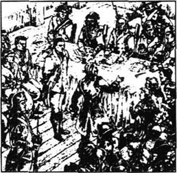
在第二天早晨查尔斯·代尔那被带到审判团面前时，马内特医生、路茜和劳里先生都在那儿。路茜看着她丈夫，眼中充满了爱，这使代尔那心中充满了温暖。它对西得尼·卡登产生了同样的影响，虽然没有人看见他站在屋子的后面。
这就是前一天释放代尔那的那同一个审判团，但是革命的法律的威力毕竟没有人民的愤怒那样强大。
审判团首席法官问：“是谁又一次指控查尔斯·埃弗蒙？”
“有3个人指控，”他被人告知说，“他被恩斯特·得法热、他的妻子特丽莎·得法热以及医生亚历山大·马内特所指控。”
当马内特医生的名字被提到后，屋子里响起了一阵巨大的哄闹声。当这些声音停下来时，马内特医生站起身来，脸色煞白浑身发抖。
“首席法官，这不可能是真的。你知道被指控的人查尔斯·代尔那是我女儿的丈夫。而我的女儿以及那些爱她的人对我来说远比我的生命都重要。那个说我指控我女儿丈夫的骗子在哪儿？”
“马内特公民，”首席法官说，“冷静点。对一个好公民来说没有什么比法兰西的自由更重要的。”
得法热走上前来回答问题。他告诉人们在革命开始时当那令人憎恶的巴士底监狱被公民们攻占时，他是如何到里面去的。
“我那时知道马内特医生曾被关在北塔105号牢房，这是他在1775年见到我时的唯一的名字。我去了那个牢房，并在一个隐蔽的小洞里找到了一张写着字的纸，那是马内特医生的手迹。”
“给我们念念。”首席法官说完，人们便坐下来静听。
我，亚历山大·马内特，在1767年巴士底狱中写下这篇记录。我已经在这儿待了漫长的10年了，我是在我能够写作的秘密时刻写这封信的。
在1757年12月的一个晚上，我正沿着塞纳河散步，一辆马车停在了我身边。车上走下两个男人，其中一个问我是不是马内特医生。当我回答说是后，他们便要我跟他们一起走，而且明确告诉我，不能拒绝。
马车离开巴黎，在一座孤零零的房子前停了下来。我听到从楼上房间里传来了哭喊声。在我走进去时，我看见一个年轻女子躺在一张床上。她年轻而且很漂亮。她病得也很厉害，一直在哭喊着：“我丈夫、我父亲，还有我弟弟！”然后她倾听了一会儿，又开始哭喊起来，“我丈夫、我父亲，还有我弟弟……。”
我给那女孩服了一些可以使她平静下来的药。但她狂躁的叫声还是继续着。后来我转身去询问那两个男人，他们显然是兄弟俩，并且他们的穿着和说话腔调表明他们是贵族，可他们提防着不让我知道他们的名字。
我还没来得及说话，那个哥哥便不在乎地说：“这儿还有一个病人。”在另一个房间里，他们指给我看一个17岁左右的男孩。他的前胸有一道剑伤，我一眼就看出他快要死了。
“这是怎么回事？”我问道。
“他只是一个发了疯的小农民，他来这儿大喊大叫着报仇。于是迫使我弟弟和他打了起来。”那位哥哥的声音冷酷而生硬；他似乎觉得这个男孩还不如一匹马或一条狗。
那个男孩的眼睛看着我。“您见到她了吗……我姐姐？”他说话很吃力。
“我已经见到她了。”我答道。
“这些有钱的贵族们对我们很残忍，医生。他们毁坏我们的土地，拿走我们的食物，他们抢走了我的姐姐。我姐姐爱上了我们村子里的一个人；他生了病，但是她还是嫁给了他以便照料他。可因为我姐姐长得漂亮，那个贵族的弟弟见到了她便想占有她。他们强迫她的丈夫日夜工作，不得休息，直到在他站着的地方倒下去死了，然后他们就把我姐姐抢走了。在我父亲听到所发生的这些事后，他虚弱的心脏承受不住这一打击，也猝然死去了。我把我的小妹妹带到了一个安全的地方，然后来这儿找这个人。他扔给我一些钱，企图像买一只狗那样收买我，可我迫使他抽出了他的剑，他要活命，就要同我决斗。”
这个男孩的生命很快就要完结了，但他却喊道：“扶我起来，医生，”他把脸转向那个哥哥，“侯爵，”他大声说，“我诅咒你和你的弟弟以及你所有的家人，无论现在还是将来，都得为你们的所做所为受到惩罚。”然后他便倒地而死。
那个年轻女子还持续地发着烧，但我救不了她。她又活了几天，于是有一次侯爵对我说：“这些农民真难死啊！”
在她死后，这兄弟俩警告我要保持缄默。他们给了我钱但我没有要，于是我被送回了家。
第二天我决定给国王的官员们写信。我知道贵族们做了违法的事情常常得不到惩罚，而且我料到不会有什么结果的。但我没意识到自身的危险。就在我写完信后，一位女士来见我，她说她是埃弗蒙侯爵的妻子，并且已经发现了她丈夫和他弟弟所干的事情。她想要帮助那个已死的女孩子的小妹妹，于是问我她在哪儿能找到她。不幸的是，我不知道，因而也无法告诉她。但我却因此知道了那两个兄弟的名字。
侯爵的妻子是一个好心善良的女人，她对婚姻深感不幸。她还带来了她的儿子，一个大约3岁的男孩。“如果我找不到这个可怜的女孩儿，”她说，“我会告诉我的儿子在我死后继续找她。你要记住，小查尔斯，好吗？”
那个小孩回答说：“好的！”
那天的晚些时侯我把我的信寄给了国王的官员们，当晚就有人敲我家的门。我的仆人，一个叫恩斯特·得法热的男子带进来一个陌生人，叫我立刻去邻街看一个病人。
我刚走出房子，便有好几个人猛地抓住了我，埃弗蒙兄弟从黑暗中走出来，侯爵从他兜里拿出了我写的信，给我看了一眼便烧了。什么话也没说，然后我就被带到了这个监狱，我的活坟墓。
我已经在这里待了漫长的10年了。我不知道我心爱的妻子是死是活。这对兄弟没有给过我任何有关我家里的消息。他们残酷的心中没有一点仁慈。我，亚历山大·马内特在痛苦和悲伤之中，在上帝面前谴责他们。
当得法热念完之后，一阵可怕的声音从人群中响起，那是愤怒和复仇的狂呼。人民痛恨的敌人埃弗蒙侯爵该死！审判结束了，在不到24小时之后，查尔斯·代尔那就要走上断头台了。
11 Madame Defarge's revenge
11
Madame Defarge's revenge
Lucie held out her arms to her husband. 'Let me kiss him, one last time.'
Most of the citizens had gone out into the streets to shout how they hated the prisoners, but Barsad was still there.
'Let her kiss her husband,' he said. 'It's just for a minute.'
Lucie went over to her husband and he took her in his arms. Dr Manette followed his daughter and fell on his knees before them, but Darnay pulled him to his feet, saying,
'No, no. Now we know how much you suffered, especially when you knew whose son I was. But you kept your feelings secret, because of your love for Lucie. We thank you, with all our hearts, for what you did. I tried so hard to do what my mother had wished, but I never found that poor girl. And how could that terrible story ever have a happy ending?'
He turned to his wife. 'My dearest love, we shall meet again, in the place where there are no worries. God be with you both.'
As Darnay was taken away, Lucie fell to the floor, unconscious. Sydney Carton came quickly forward to help Mr Lorry and Dr Manette. He carried Lucie to her coach and she was taken home. Then he carried her into the house where her daughter and Miss Pross waited, tears falling from their eyes.
'Before I go,' said Sydney Carton, 'may I kiss her?' He touched Lucie's face lightly with his lips, whispered a few words, and went into the next room.
'You are still very popular with the citizens, Doctor. You must try again to talk to the judges.'
'I'll do everything I can. Everything,' Dr Manette said.
Mr Lorry went with Carton to the door.
'I have no hope,' whispered Mr Lorry sadly.
'Nor have I,' replied Carton. 'After today, no judge in Paris would even try to save him. The people would be too angry. I will return here later, to see if there is any news, but there is no real hope.'
He left the house and began to walk quickly towards Saint Antoine. His face was calm and serious; he looked like a man who had decided to do something. 'I must show myself to the people here,' he thought. 'They should know that there is a man like me in the city.'
In Defarge's wine-shop the only customer was Jacques Three, who had been on the Tribunal that had decided Darnay should die. When Carton sat down and asked for a glass of wine, Madame Defarge looked at him carelessly at first. Then much more carefully. She went back to her husband and Jacques Three, who were talking. 'He is very much like Evrémonde,' she said softly.
Defarge himself looked at Carton and said, 'Yes, but only a little,' and the three continued their conversation. Carton listened carefully, while pretending to read a newspaper.
'Madame is right,' said Jacques Three. 'Why should we' stop at Evrémonde?'
'We must stop somewhere,' said Defarge.
'Not until they are all dead, every one of that family,' said his wife.
'You're right, but think how much the Doctor has suffered. Perhaps he has suffered enough.'
'Listen,' said Madame Defarge coldly. 'Don't forget that I was that younger sister. And it was my family that suffered so much from the Evrémonde brothers. It was my sister who died, and my sister's husband, and my father; it was my brother who was killed. Tell others to stop; don't tell me!'
Carton paid for his wine and went out quickly on his way. He went back to Dr Manette's house, where more bad news was waiting for him. The Doctor's mind had returned to the past once again. He did not recognize his friends, and wanted only to find his old table and to make shoes.
'Listen to me carefully,' Carton said to Mr Lorry. 'I believe that Lucie, her daughter, and perhaps even her father are in great danger. I heard Madame Defarge talking about them tonight. They must leave Paris tomorrow. They have the necessary papers, and so do you. Here are mine—take them and keep them safe with your own. You must leave by coach at two o'clock tomorrow. Keep a place for me in the coach, and don't leave without me. Promise that you will do exactly what I have said. Many lives will depend on it.'
'I promise,' said Mr Lorry.
fell on one's knees 跪下。
suffer v. feel or have pain, loss. etc. 受苦。
especially adv. in particular. 特殊地，尤其。
unconscious adj. not conscious. 失去知觉的。
lightly adv. gently 轻轻地。
conversation n. talking, talk. 谈话。
pretend v. make oneself appear to be sth. or doing sth. 假装。
enough adj. as great as is needed. 足够的。
own pron. 自己的。
得法热夫人的报复
11 得法热夫人的报复
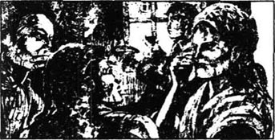
路茜向他的丈夫伸出双臂。“让我吻吻他，最后一次。”
大多数公民已经走上街头，喊着他们是多么痛恨罪犯们，可巴萨德仍旧留在那儿。
“让她吻一下她丈夫吧，”他说，“只须一分钟。”
路茜走向她丈夫，他便把她搂在怀里。马内特医生跟着女儿并在他们面前跪了下来，但代尔那把他拉了起来，说道：
“不，不，现在我们知道您受了多少苦，尤其是当您知道我是谁的儿子的时候。可您隐藏着您的感情，是为着您对路茜的爱。我们谢谢您所做的事情，由衷地谢谢您。我尽力去做了我母亲希望我做的事，可我一直没有找到那个可怜的女孩。况且那么一个可怕的故事怎么会有一个幸福的结局呢？”
他转向他的妻子：“我最亲爱的，我们会再相见的。在无忧无虑的地方，上帝与你们两个人同在。”
当代尔那被带走后，路茜倒在地上，不醒人事。西得尼·卡登快步走过来帮劳里先生和马内特医生的忙。他把路茜抱上了马车送她回家，然后他把她抱进了她女儿和普罗斯小姐等候着的房子，泪水从她们的眼中落下来。
“我走之前，”西得尼·卡登说，“我能吻吻她吗？”他的嘴唇轻轻地吻了路茜的脸颊，小声地说了几句话，然后走进了旁边的一个房间。
“您在公民中仍旧很受欢迎，医生。您必须尽力再同法官们谈谈。”
“我会去做我所能做的一切事情的。一切事情。”马内特医生说。
劳里先生和卡登一起走到了门口。
“我不抱希望了。”劳里先生悲哀地低声说道。
“我也不抱希望了。”卡登回答，“过了今天，巴黎甚至将不会有法官去救他了，人们会过于愤怒的。我过一会儿再来，看看是否有什么消息，但是不会有真正的指望了。”
他离开了房子便快步向圣安东尼走去，他的脸平静而严肃，看上去像一个已下定决心要去做件大事的人。“我得向这里的人展示一下我自己。”他想，“他们得知道在这个城市里有一个像我这样的男人。”
得法热的酒店里唯一的一名顾客是雅克三，他刚去参加了判处代尔那死刑的那个审判会。在卡登坐下要一杯酒时，得法热夫人起初不在意地看着他，接着便非常仔细地看起他来。她回到正在谈话的她丈夫和雅克三身边，轻声地说：“他可真像埃弗蒙。”
得法热自己看着卡登说：“是的，可只有一点儿像。”然后他们三人接着聊天。卡登一边装着看报纸一边仔细听着。
“夫人是对的，”雅克第三说，“我们为什么要在埃弗蒙这儿就打住呢？”
“我们必须适可而止。”得法热说。
“在他们，包括那个家族里的每一个人都死掉之前，我们不能就这样打住。”他妻子说。
“你是对的，但是想一想医生受了多少苦，也许他已经受够了。”
“听着，”得法热夫人冷酷地说，“别忘了我就是那个小妹妹，并且是我的家庭受了埃弗蒙兄弟那么多的苦难。是我的姐姐死去了，还有我姐姐的丈夫，以及我的父亲；是我的哥哥被杀死了。去让别人打住吧，别让我这么做！”
卡登付了酒钱便匆匆出门上了路。他回到了马内特医生的住处。那里有更多的坏消息在等着他。医生的思维又一次回到了从前。他不认识他的朋友了，而只想着要找他的老桌子做鞋。
“仔细听我说，”卡登对劳里先生说，“我确信路茜、她的女儿，也许还有她的父亲都处在极大的危险中。我今晚听到得法热夫人在谈论他们。他们明天必须离开巴黎。他们有必需的证件，你也有。这是我的证件——把它们拿去同你的放在一起妥善保管。你们必须在明天两点钟乘马车离开。在马车上给我留个位置，要等我来了再走。你一定要完全照我说的去做；保全许多人的生命就在此一举了。”
“我答应你。”劳里先生说道。
12 A change of clothes
12
A change of clothes
Charles Darnay passed his last night alone in the prison. He had no hope. He knew he must die, not for anything he had done wrong, but for the crimes of his father and his uncle. He sat down to write to his wife:
I knew nothing about the time your father spent in prison until he told me. Even then I did not know that it was my family that had been so cruel to him. I told your father that my real name was Evrémonde, and he made me promise not to tell you. I am sure that he had forgotten the paper he had written, but what has happened now is not his fault. Take care of him and our child , and one day we shall all meet again in the happier world that comes after death.
Darnay did not sleep peacefully that night and in the morning he walked up and down his prison, waiting. He counted the hours—nine, gone for ever, ten, eleven, twelve gone for ever. At one o'clock he heard someone outside the door. The door opened and closed and there stood Sydney Carton, holding a warning finger to his lips.
'Be quiet! I come from your wife. She begs you to do exactly what I say, and to ask no questions. There is no time. Take off your boots and put on mine.'
'Carton, my dear friend,' said Darnay, 'it is impossible to escape from this place. You will only die with me.'
'I'm not asking you to escape. Put on my shirt, and my coat.' He did not allow Darnay time to argue or refuse. 'Now sit down and write what I say,' he said. 'Quickly, my friend, quickly!'
'If you remember,' he said, and Darnay wrote, 'the words we spoke so long ago, you will understand this when you see it.' As he said this, Carton took his hand from his pocket.
'What is that in your hand?' asked Darnay.
'Nothing. Have you written "see it"? Good, now go on writing,' said Carton quietly. 'I am happy that I can prove them now. This is not a reason for sadness.' Carton's hand was close to Darnay's face, and he gently pressed a cloth against Darnay's nose and mouth. A minute later Darnay lay unconscious on the ground. Carton quickly dressed himself in Darnay's clothes, and pushed the note that Darnay had written inside Darnay's pocket. Then he went to the door and called softly, 'Come in now.'
The spy Barsad came in.
'Quick, help me,' said Carton. 'You must help me to the coach.'
'You?' asked the spy.
'Him, man, I've changed places with him. You can say that it was too much for him, saying his last goodbye to his friend. That happens quite often, I believe.'
'Yes, often,' replied Barsad. 'But do you promise to keep me out of danger, and go on with this plan to the end? The number must be right. Fifty-two prisoners must die today.'
'Have I not already promised to be true to the death? Hurry, man! Take him to Mr Lorry, put him in the coach yourself, and tell Mr Lorry to leave at once!'
Barsad called two men into the room, and told them to lift the unconscious man and carry him out.
'The time is short, Evrémonde,' said Barsad, in a warning voice.
'I know it well,' replied Carton. 'Be careful with my friend, and leave me.'
The door closed and Carton was left alone. He listened carefully but there were only normal prison sounds. No shouts, no alarm bells. He waited calmly.
Soon he heard the sound of doors opening. The door of his prison cell opened and a man said, 'Follow me, Evrémonde!' and Carton followed him into a large, dark room.
There were many people there, some standing, some sitting, some walking about, some crying. Most of them stood, silent, looking at the ground. A young woman came up to him; she was thin and pale.
'Citizen, Evrémonde,' she said. 'I was with you in La Force.'
'True,' he said softly, 'but I forget what you were accused of.'
'I am innocent. What could a poor little thing like me do? I am not afraid to die, Citizen Evrémonde, but I have done nothing.'
Her sad smile as she said this touched Carton's heart.
'They say that the Revolution will do so much good for the poor people,' said the girl. 'How can my death help the poor? If it is true, I am willing to die, but I do not know how that can be. I heard that you were set free, Citizen Evrémonde,' she went on. 'I hoped it was true.'
'It was, but I was taken again, and condemned.'
'When we go from here, Citizen Evrémonde, will you let me hold your hand? I am not afraid but I am little and weak, and it will help to make me brave.' The young girl looked into his face and he saw a sudden doubt come into her eyes, followed by surprise. He touched his lips with his finger.
'Are you dying for him?' she whispered.
'And his wife and child. Yes.'
'Oh, will you let me hold your brave hand, stranger?'
'Yes, my poor sister, to the last.'
alone adv. without the company or help of others. 独自地。
peacefully adv. calmly, quietly. 安详地，宁静地。
fault n. responsibility for being wrong. 过失，过错。
exactly adv. in an exact manner. 正确地；完全地。
press v. push steadily against. 按，压。
lift v. raise to a higher level or position. 举起，抬起。
normal adj. in agreement with what is representative, usual, or regular. 正常的。
cell n. a small room for one person. 小囚房。
touch v. be in contact with. 碰及，接触。
set free 释放。
doubt n. uncertainty of mind. 怀疑。
brave adj. ready to face danger, pain, or suffering; having no fear. 勇敢的，无畏的。
互换衣服
12 互换衣服
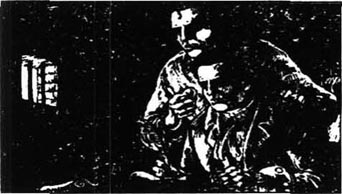
查尔斯·代尔那独自一人在监狱里过着他最后的一个夜晚。他不抱什么希望了。他知道他必须得死，不是因为他做错了什么事，而是因为他父亲和叔叔所犯下的罪行。他坐下来给他的妻子写信：
在你父亲告诉我以前，我对他在监狱中度过的岁月一无所知。即便那时我也不知道是我的家庭曾那样残忍地对待过他。我当时告诉你父亲我的真实姓氏是埃弗蒙，但他让我发誓不要告诉你。我相信他那时已经忘了他曾在监狱里写的那份记录。但是现在发生的事不是他的过错。你要好好照顾他和我们的孩子。会有一天我们将重逢在一个更幸福的世界里的，人们死后就会到来的那个世界。
代尔那那天晚上没有安睡过，凌晨他在囚室里走来走去地等待着。他数着时间——9点，永远过去了，10点、11点、12点，都永远消逝了。一点钟时他听见有人在门外。门开了又关上。西得尼·卡登走了进来。他伸出一只手指按在嘴上告诉他别出声。
“我从你妻子那儿来；她求你完全按照我说的去做。什么也别问，没时间了。脱掉你的靴子换上我的。”
“卡登，我亲爱的朋友，”代尔那说道，“从这个地方逃跑是不可能的，你只会和我一起去死的。”
“我没让你逃跑。穿上我的衬衫。还有我的大衣。”
他没有给代尔那争辩或拒绝的时间。“现在坐下写下我说的话。”他说，“快点儿，我的朋友，快一点儿。”
“如果你还记得，”他说着，代尔那写着。“我们很久以前说过的话，那么在你看到它时就会明白这一点了。”当他说着这些话时，卡登从兜儿里伸出手来。“你手里是什么东西？”代尔那问。
“没什么。你写完‘看到它’了吗？好的，现在接着写。”卡登平静地说，“我很高兴现在能够验证那些话了。没有理由伤心。”卡登的手靠近了代尔那的脸并轻轻地把一块布按在了代尔那的鼻子和嘴上。一分钟过后，代尔那便失去了知觉，躺在了地上。卡登迅速穿上了代尔那的衣服，并把代尔那刚写的纸条塞进了代尔那的口袋里，然后他走到门边轻声喊道：“现在进来吧。”
那个间谍巴萨德走了进来。
“快，帮帮我。”卡登说，“你必须帮助我上马车。”
“你？”间谍问。
“他，伙计。我已经和他换了位置。你可以声言说他承受不住和他的朋友诀别。这样的事经常发生，我相信。”
“是的，经常发生。”巴萨德答道。“但你许诺过不让我有危险，并把计划坚持到底的呀？数字必须是对的，今天必须死52名囚犯的。”
“我难道还没保证要真的去死吗？快点，伙计！带他去劳里先生那儿，你自己把他抬到马车里去，告诉他们马上就走。”
巴萨德叫了两个人进了牢房；并让他们把那个失去知觉的人抬起来扛出去。
“时间不多了，埃弗蒙。”巴萨德以警告的语气说。
“我很清楚。”卡登回答说，“小心照顾我的朋友，留我一个人在这儿好了。”
门关上了，卡登独自留了下来。他仔细地听着，只有正常的监狱里的声响。没有喊叫，没有警铃。他平静地等待着。
不久他听到了开门的声音。他的囚室的门开了，一个人说道：“跟我走，埃弗蒙！”于是卡登便跟着他来到一个大而暗的房间里。
那里面有很多人，有站着的，有坐着的，有来来回回走着的，有哭喊着的。他们大多数都默默地站着，看着地面。一个年轻女子向他走来，她又瘦又苍白。
“埃弗蒙公民，”她说，“我曾在拉弗尔斯和你在一起待过。”
“是的，”他柔声说，“只是我忘了你是为什么被指控的。”
“我是无辜的。像我这么个可怜的小人物能干什么呢？我不怕死，埃弗蒙公民，只是我什么也没有做。”
她说这话时悲伤的笑容触动了卡登的心。
“他们说革命会给穷人们带来很多好处。”女孩说道。“我的死能帮穷人什么忙呢？如果能，那么我乐意去死。但我不明白这怎么可能呢？我曾听说你被释放了的，埃弗蒙公民。”她接着说。“我当时希望这是真的。”
“是真的，但又被抓起来了，而且宣判了死刑。”
“在我们从这儿走时，埃弗蒙公民，你能让我抓住你的手吗？我不怕死，可是我又小又弱，所以那样会让我勇敢起来的。”年轻的姑娘看着他的脸，他发现她眼中忽然露出一丝怀疑，跟着便是惊讶。他用手指碰了碰嘴唇。
“你为他去死吗？”她低声问。
“还有他的妻子和孩子。是的。”
“噢，你能让我拉着你勇敢的手吗？陌生人？”
“是的，我可怜的小妹妹，直到最后。”
13 The last goodbyes
13
The last goodbyes
At that same hour in the early afternoon a coach going out of Paris drives up to the gates of the city.
'Who goes there? Show us your papers!' The guard looks at the papers. 'Alexandre Manette, Doctor. Which is he?'
This is Dr Manette; this helpless old man, whispering crazily to himself.
'The last few days of the Revolution have been too much for him,' said the guard with a cruel laugh. 'Lucie his daughter. The wife of Evrémonde. Which is she?'
This is she. With her child, little Lucie, beside her.
'Hah, your husband has another meeting today. Sydney Carton. Lawyer, English. Which is he?'
He is here, in the corner. He is not well.
'And Jarvis Lorry. Banker, English. Which is he?'
'I am he, and the last,' says Jarvis Lorry.
'Here are your papers, Jarvis Lorry. You may go.'
There are wildly beating hearts in the coach, and trembling hands; there is the heavy breathing of the unconscious traveller. But onwards the coach goes; the horses are fast, and there are no shouts behind them on the road.
Also that afternoon Madame Defarge was talking with her friends.
'My husband is a good citizen, but he is not strong enough. He feels sorry for the Doctor. I say that all the Evrémonde people must go to the Guillotine. The wife and the child must follow the husband.'
'They're both fine heads for the Guillotine,' said Jacques Three. 'Their heads will be a pretty sight when they are shown to the people. Yes, they too, must die.'
'But I'm afraid that my husband may warn them and let them escape,' Madame Defarge went on, 'and I must do something myself. After the death of Evrémonde at three this afternoon we'll go to the Tribunal and accuse them.'
The others agreed willingly. 'No one must escape. More heads must fall.'
'Lucie Manette will be at home now, waiting for the moment of her husband's death,' said Madame Defarge. 'I will go to her. She will say things against the Revolution, and condemn herself. Here, take my knitting and keep my usual seat near the Guillotine.'
'Don't be late,' said her friend.
'To see the death of Evrémonde, I shall not be late,' replied the cruel voice of Madame Defarge.
There were many women in Paris at that time who hated the nobles and wanted to see them die. But of all these women, Madame Defarge was the one most feared. All her life she had been filled with hate. It was nothing to her that an innocent man was going to die because of his father's and his uncle's crimes. She wanted more. Hidden in her clothes were a gun and a sharp knife, and with her usual confident step, she began to walk to Dr Manette's house.
The house was not yet empty. Miss Pross and Jerry Cruncher were there, preparing to follow Mr Lorry's coach. Mr Lorry had decided that two coaches were better than one; with fewer passengers, each coach would travel faster. But Miss Pross was still worried. A second coach leaving from the house might suggest an escape.
'Mr Cruncher,' she said, 'you must go and stop our coach coming here. Drive to the church instead, and I'll meet you there at three o'clock.'
Jerry hurried away. It was twenty past two, and at once Miss Pross began to get herself ready to leave. She was washing her face when she suddenly looked up and saw a figure standing in the room.
Madame Defarge looked at her coldly. 'The wife of Evrémonde; where is she?'
Miss Pross quickly stood in front of the door to Lucie's room. 'You're a cruel, dangerous woman, but you won't frighten me,' she said, breathing hard.
Each woman spoke in her own language, and neither understood the other's words. But Madame Defarge knew that Miss Pross was a true friend of the Doctor's family, and Miss Pross knew that Madame Defarge was the family's enemy.
'I wish to see the wife of Evrémonde. Go and tell her. Do you hear me?' said Madame Defarge. She stared angrily at Miss Pross, but Miss Pross stared back just as angrily.
'I am desperate,' said Miss Pross. 'I know that the longer I can keep you here, the greater hope there is for my darling girl. If you fight me, I'll fight back!'
Madame Defarge stepped forward and called loudly, 'Citizen Doctor! Wife of Evrémonde! Answer me!'
There was no answer and Madame Defarge quickly opened three of the doors and saw that the rooms were empty. One door was still closed.
'If they are not in that room, they are gone. But they can be followed and brought back.' She went towards the door, but Miss Pross jumped forward and held her round the waist. Madame Defarge was used to the fighting in the streets and was strong, but love is stronger than hate and Miss Pross did not let go. Madame Defarge tried to pull out her knife.
'No,' said Miss Pross, 'it's under my arm. You shall not have it.'
Madame Defarge put her hand to the front of her dress and began to pull out the gun. Miss Pross looked down, saw what it was, and hit out at it wildly. There was a loud bang, and a cloud of smoke, and Miss Pross stood alone, trembling with terror.
All this in a second. As the smoke cleared, Miss Pross saw the lifeless body of Madame Defarge on the ground. In horror, she opened her mouth to call for help, but then she thought of the dangers this would bring for her dear Lucie. With shaking hands, she got her hat and coat, locked the door of the room, and went downstairs. As she crossed the bridge on the way to the church, she dropped the key of the locked room in the river and hurried on to meet Jerry Cruncher.
* * *
As the death-carts carry the condemned prisoners through the streets of Paris, crowds watch to see the faces of those who are to die. In the chairs around the Guillotine, the friends of Madame Defarge are waiting for her. 'Teresa, Teresa Defarge! Who has seen her? She's never missed before!'
But the death-carts have arrived, and the Guillotine has already begun its work. Crash! —A head is held up, and the women who sit knitting count One.
The supposed Evrémonde helps the young girl down from the cart. He carefully places her with her back to the Guillotine, and she looks up gratefully into his face.
'Because of you, dear stranger, I am calm. I think you were sent to me by God,' she whispers.
'Or perhaps He sent you to me,' says Sydney Carton. 'Keep your eyes on me, dear child, and do not think of anything else.'
'I do not mind while I hold your hand. I shall not mind when I let it go, if they are quick.'
'They are quick. Fear not!'
She kisses his lips; he kisses hers. Now the Guillotine is waiting. The young girl goes next, before him. The women count Twenty-Two, and Carton walks forward.
Twenty-Three.
They said of him that it was the most peaceful face ever seen there. What passed through Sydney Carton's mind as he walked those last steps to his death? Perhaps he saw into the future...
'I see Barsad, Defarge, the judges, all dying under this terrible machine. I see a beautiful city being built in this terrible place. I see that new people will live here, in real freedom. I see the lives for whom I give my life, happy and peaceful in that England which I shall never see again. I see Lucie when she is old, crying for me on this day every year, and I know that she and her husband remember me until their deaths. I see their son, who has my name, now a man. I see him become a famous lawyer and make my name famous by his work. I hear him tell his son my story.
'It is a far, far better thing that I do, than I have ever done; it is a far, far better rest that I go to, than I have ever known.'
helpless adj. without help; not receiving help. 无助的。
lawyer n. person who has studied law, esp. an attorney or solicitor. 律师。
wildly adv. in a violent manner. 狂野地，激动地。
willingly adv. done, given, etc. readily, without hesitation. 甘愿地。
fear v. feel fear of, be afraid of. 害怕，惧怕。
confident adj. feeling or showing confidence. 有信心的。
instead adv. in place of. 代替。
true adj. loyal, faithful. 忠诚的，忠实的。
desperate adj. filled with despair and ready to do anything, regardless of danger. 因绝望而不惜冒险的。
be used to 习惯于。
terror n. great fear. 恐怖。
horror n. feeling of extreme fear or dislike. 恐怖。
miss v. fail to see. 未看见。
count v. say or name in order. 按顺序数。
suppose v. let it be through that; take it as a fact that. 认定；假定。
gratefully adv. feeling or showing gratitude. 感激地。
terrible adj. causing great fear or horror. 可怕的。
famous adj. known widely. 著名的，出名的。
最后的道别
13 最后的道别
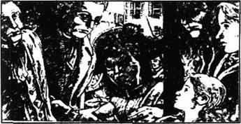
在那天午后不久的同一时刻，一辆出巴黎的马车正驶向城门。
“谁在那儿？请出示你们的证件！”卫兵看着证件说，“亚历山大·马内特医生。哪个是他？”
这是马内特医生，这个无助的老人，正发疯地对自己嘀咕着。
“最近几天的革命让他受不了啦。”卫兵残忍地大笑着说，“路茜是他的女儿，埃弗蒙的妻子。哪个是她？”
这就是她，还有她的孩子，小路茜在她身边。
“哈，你丈夫今天可有另外一个聚会哟。西得尼·卡登律师，英国人。哪一位是他？”
他在这儿，在角落里。他身体不舒服。
“还有贾维斯·劳里，银行家，英国人。是哪一位？”
“我就是，也是最后一位。”贾维斯·劳里说。
“这是你们的证件，贾维斯·劳里，你们可以走了。”
车里的人的心都狂跳着，手也在发抖，还有那个失去知觉的旅行者发出的沉重的呼吸声，但马车在前进，马匹跑得飞快，在他们身后的路上没有喊叫声。
也就在那天下午，得法热夫人正在和她的朋友们谈话。
“我的丈夫是个好公民，可他不够坚定。他可怜医生。我说要让埃弗蒙家的所有人都上断头台，妻子和孩子都得跟那个丈夫一起去。”
“她们俩的头可是断头台上的好货色，”雅克三说，“把她们的头展示给人民将会是一个漂亮的景观。是的，她们也都得死。”
“可我担心我丈夫会报警给她们让她们跑掉。”得法热夫人说，“所以我必须亲自做点什么。在今天下午3点钟埃弗蒙死后，我要去审判团指控她们。”
其他人都欣然同意。“不许有任何人跑掉；必须有更多的人头落地。”
“路茜·马内特现在应该正在家里等着她丈夫死的那一刻。”得法热夫人说，“我要去找她，她会说一些反对革命的话，因而招来罪名。好了，拿着我的毛线活儿，把断头台旁边我一向待的位子留着。”
“别晚了。”她的朋友说。
“去看埃弗蒙的死，我不会晚的。”得法热夫人用冷酷的声音回答道。
那时的巴黎有很多妇女痛恨贵族并希望看到他们死。但在所有这些妇女中，得法热夫人是最可怕的一个。她的生命中充满了仇恨。一个无辜的男人正要因为他父亲或他叔叔的罪孽而死，这对她来说算不了什么。她所要的比这更多。她在衣服里藏了一支枪和一把尖刀，便迈着她一贯自信的步伐，开始朝马内特医生的住处走去。
房子里的人尚未走空。普罗斯小姐和杰里·克拉彻还在里面，正准备着跟上劳里先生的马车。劳里先生已断定两辆马车比一辆要好。乘客少些马车可以走得更快些。可普罗斯小姐仍旧很担心，因为第二辆马车离开这座房子也许会显示出逃跑的迹象。
“克拉彻先生，”她说，“你得去拦一下我们的马车别让它到这儿来，而是改去教堂。我会在3点钟时和你会合。”
杰里赶紧走了。那是2点20分，普罗斯小姐立刻开始为离开而做准备。在她洗脸时，她突然抬头看到一个人正站在房间里。
得法热夫人冷冷地看着她。“埃弗蒙的妻子，她在哪儿？”
普罗斯小姐迅速站到了路茜的房门前。“你是一个残忍、危险的女人，可是你吓唬不了我。”她呼吸艰难地说。
两个女人各自说着自己的语言，彼此都听不懂对方的话。而得法热夫人知道普罗斯小姐是医生家的一个真正的朋友；而普罗斯小姐知道得法热夫人是这个家的敌人。
“我要见埃弗蒙的妻子，去告诉她，你听到了吗？”得法热夫人说道。她愤怒地盯着普罗斯小姐，而普罗斯小姐也同样愤怒地盯着她。
“我豁出去了，”普罗斯小姐说，“我知道我在这儿把你拖得越久，我亲爱的姑娘的希望就越大。如果你打我，我也会反击你的。”
得法热夫人走上前去大喊起来：“医生公民！埃弗蒙的妻子！回我的话！”
得法热夫人没听到答话便迅速打开了其中的三扇房门，看到房间是空的。有一扇门还关着。
“如果他们不在那间房里，那么就是已经走了。可他们会被追上并给抓回来的。”她向那扇门走去，可普罗斯小姐冲上前去抱住了她的腰。得法热夫人已经习惯了在街上打架而且她很壮实，但爱比恨的力量更强大，普罗斯小姐没有松手。得法热夫人企图拔出刀来。
“不。”普罗斯小姐说，“刀在我胳膊底下，你是拿不到的。”
得法热夫人把手伸到裙子前面开始拔枪。普罗斯小姐朝下一看，弄清了那是什么东西，就猛烈地朝外打它。一声巨响，接着又是一团烟。之后，普罗斯小姐便独自站在那儿，恐惧地颤抖着。
这一切都发生在一秒钟内。烟雾消散之后，普罗斯小姐看见得法热夫人断了气的身体躺在地板上。由于恐惧，她张嘴喊着救命，但她又想到这会给她亲爱的路茜带来危险。她颤抖着双手，拿上帽子和外衣，锁上房门便下了楼。在去教堂的桥上，她把开房门的钥匙扔到了河里便匆匆赶去见杰里·克拉彻。
当死囚车载着死刑犯们穿过巴黎的街道时，人们集中注意力看那些临死的人们的脸。得法热夫人的朋友们正坐在断头台周围的椅子上等着她。“特丽莎，特丽莎·得法热！谁见到她了？她以前从来没错过的！”
可是死囚车已经到了，断头台已开始工作了。咔嚓！——一个人头被举了起来，坐在那儿编毛线活的女人们数着“一个。”
那个被当做了埃弗蒙的人帮着那个小女孩下了囚车。他小心地让她背对着断头台，她感激地抬头望着他的脸。
“因为您，亲爱的陌生人，我才这样平静。我想您是上帝送给我的。”她小声说道。
“或许是上帝把你送给我的。”西得尼·卡登说，“眼睛看着我，亲爱的孩子，别的什么事都不要想。”
“我拉着你手的时候就不害怕了，松开手后我也不害怕，如果他们能快点的话。”
“他们很快。别怕。”
她吻了他的嘴唇；他也吻了她的。断头台现在正在等着，下一个就是年轻的女孩子，在他之前。女人们数着二十二，接着卡登走上前去。
二十三。
人们谈论他说他的脸是在那种地方所能见到的最平静的脸。当西得尼·卡登迈着最后的步伐向死亡走去时，他的脑海中想到了什么呢？也许他看到了未来……
“我看见巴萨德、得法热、法官们都在这个可怕的机器下面死去。我看到一个美丽的城市正在这片可怕的土地上建立起来。我看到新一代的人民将在真正的自由中生活。我看到我为之付出生命的人们，他们幸福安宁地生活在我再也见不到的英国。我看见路茜年老的时候，每一年的这一天都会为我哭泣，我知道她和她的丈夫会一直到死都记着我。我看见他们的儿子，有着和我一样的名字，现在长成了一个男人。我看见他成了一位著名的律师并通过他的工作而使我扬名四方。我听见他给他的儿子讲起我的故事。”
“我做的是一件很好的事。它远远好过我所做的所有的事。它将是一个很好的长眠，远比我所知道的要好。”
Exercises
Exercises
A Checking your understanding
Chapters 1-4 Who in these chapters...
1 ... had brought Lucie Manette back to England as a small child?
2 ... thought his name was One Hundred and Five, North Tower?
3 ... was the prisoner at the trial at the Old Bailey?
4 ... looked very like the prisoner at the trial?
5 ... had a child who was killed by a coach in Saint Antoine?
6 ... was murdered in his bed?
Chapters 5-7 Write answers to these questions.
1 What did Sydney Carton ask Lucie to remember always?
2 What did Darnay tell Dr Manette on the morning of his marriage?
3 What news did Jacques Five bring to Saint Antoine in Paris?
4 Why was Madame Defarge always knitting?
5 Why did Darnay decide that he had to go to Paris?
Chapters 8-10 Are these sentences true (T) or false (F)?
1 Madame Defarge was kind to Lucie when she visited her.
2 Only guilty people were sent to the Guillotine.
3 John Barsad's real name was Solomon Pross.
4 Barsad refused to help Carton in any way.
5 Dr Manette was kept in prison for eighteen years because he knew too much about the crimes of the Evrémonde brothers.
Chapters 11-13 Find answers to these questions in the text.
1 Why did Madame Defarge hate the Evrémonde family?
2 Why wasn't Dr Manette able to do anything to help Darnay?
3 How did Sydney Carton get a last message to Lucie?
4 Who was the unconscious traveller in the coach leaving Paris?
5 Why wasn't Madame Defarge at the Guillotine to see Evrémonde die?
6 Why was Sydney Carton happy to die?
B Working with language
1 Put this summary of Gaspard's story into the right order, and make five sentences.
1 it knocked down and killed Gaspard's child.
2 The next morning the Marquis was found murdered,
3 taken back to the village near the castle and hanged.
4 After the accident the Marquis drove home to his castle,
5 When the Marquis's coach was driving through Saint Antoine,
6 lying in bed with a knife through his heart.
7 where the women went to fetch water and the children played.
8 but Gaspard travelled with him, holding on under the coach.
9 His body was left hanging in the village square,
10 A year later Gaspard was caught by the soldiers,
2 Complete these sentences with information from Chapter 8.
1 Dr Manette was safe in Paris because...
2 Although Dr Manette was sure he could save Charles, Lucie...
3 Dr Manette had an official job as doctor to three prisons so...
4 When Darnay told the Tribunal that he had married Dr Manette's daughter, ...
5 Darnay was set free by the Tribunal, but...
C Activities
1 Which person in the story did you like most, and which did you like least? Why? Write a paragraph about each person, giving your opinions.
2 Do you think the title of the book, A Tale of Two Cities, is a good one? What other titles can you think of?
3 Imagine that you are Lucie or Charles, talking to their son, who was born after the end of the story. He is now old enough to hear the story of Sydney Carton, and how and why he died. Write down what you would say.
封底
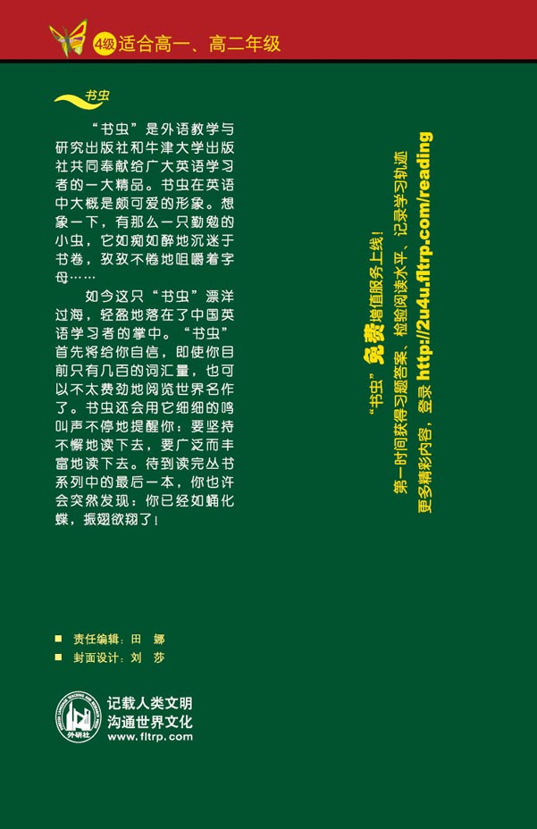